iMESchelp!
iMESchelp!
- Introduction
- 1 Setup
- 2 Layout
- 3 Widgets
- 4 Datalist
- 5 Main Analyses
- 6 Essentials of Building a Workflow in iMESc
- 7 Pre-processing Tools
- 8 Sidebar-menu
- 9 Packages & functions
- 10 References
Introduction
Welcome to the iMESchelp, your comprehensive guide to use iMESc:an interactive machine learning app designed to analyze environmental data. iMESc is a shiny-based application that allows the performance of end-to-end machine learning workflows. It provides a wide range of resources to meet the various needs of environmental scientist, making it a versatile tool for data analysis.
This manual is organized into the following sections:
Setup: Step-by-step instructions to run iMESc.
Layout: The dashboard organization.
Widgets: The interactive widgets used in iMESc, such as buttons, dropdowns, and checkboxes, which enable seamless interactions with the app.
Datalist: Exploring the core concept of Datalists and their attributes.
Essentials of Building a Workflow in iMESc: Generic workflow steps commonly encountered while using iMESc.
Pre-processing Tools: In-depth coverage of the tools available for pre-processing data, including Datalist creation and data transformation.
Sidebar-menu: Details about the modules, analyses and algorithms, parametrization, and results.
Packages & Functions: Details about the main R packages and functions used in iMESc, along with their respective versions and analytical tasks.
1 Setup
Once installed, open the R studio;
Install shiny package if it is not already installed;
Run the code below.
When you use the iMESc app for the first time, it will automatically install all the necessary packages, which may take several minutes to complete. However, once the first installation is finished, subsequent access of the app will be much faster. If the required packages are not already loaded, they typically take several seconds to load. On the other hand, if the packages are already loaded, iMESc will start almost instantly.
2 Layout
iMESc is designed with a dashboard layout, consisting of three main sections:
Pre-processing tools on the top-left containing widgets for Datalist options and pre-processing data.
Sidebar-menu on the left-hand side containing menu buttons.
The Main panel for viewing the analytical tasks.
Upon selecting a menu button, users will seamlessly navigate to a sub-screen housing the selected module. Each module features a header equipped with interactive widgets, along with multiple tab panels that support various functionalities.
To ensure an optimal display of iMESc content, we strongly recommend a minimum landscape resolution of 1377 x 768 pixels. Adhering to this resolution, it will guarantee an enhanced user experience and proper visualization of all elements on the screen.

3 Widgets
The app is built using widgets: web elements that users interact with. The standard iMESc widgets are:
| Widgets | Task | |
|---|---|---|
| Button | Performs an action when clicked |  |
| Picker/Dropdown | Allows the user to select only one of a predefined set of mutually exclusive options | |
| Checkbox | Interactive box that can be toggled by the user to indicate an affirmative or negative choice | |
| Checkbox group | A group of check boxes |  |
| Radiobuttons | Allows the user to choose only one of a predefined set of mutually exclusive options | |
| File | A file upload control wizard | 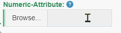 |
| Numeric | A field to enter numbers | 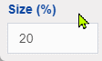 |
| Text | A field to enter text |  |
4 Datalist
iMESc manages data through Datalists Fig S4.1, which can include sheets and shape-files (user-provided). The sheets are internally treated as data.frame objects in R, where rows represent observations and columns represent variables. Matching observations among these attributes, regardless of the Datalists they come from, is achieved based on the row names, ensuring data consistency. To ensure proper handling of the sheets-attributes, you must provide a unique ID and place it in the first column when uploading the data. iMESc automatically removes this first column and adds it as the row names of the respective attribute. Decimals in iMESc are represented with dots (e.g. 1/2 =0.5), check it before uploading a file.
Required
| Numeric-Attribute | Numerical data with continuous or discrete variables. |
Optional
| Factor-Attribute: | Categorical data. If not provided, iMESc automatically generates this attribute as a sheet with a single column containing the IDs of the Numeric-Attribute. |
| Coords-Attribute | Geographical coordinates (Longitude, Latitude) represented in decimal degrees, used for spatialization of data within the Spatial Tools. |
| Base-Shape-Attribute: | A polygon shape to clip or interpolate spatialized data for map generation. |
| Layer-Shape-Attribute: | Adds extra shapes for superimposition on maps. |
| Extra-Shape Attribute: | Users can add other shapes as Extra-Shape-Attribute to further customize their maps. |
Furthermore, Datalists have the capacity to store models that have been trained using the iMESc, permitting users to integrate and manage predictive models along with their data sets.
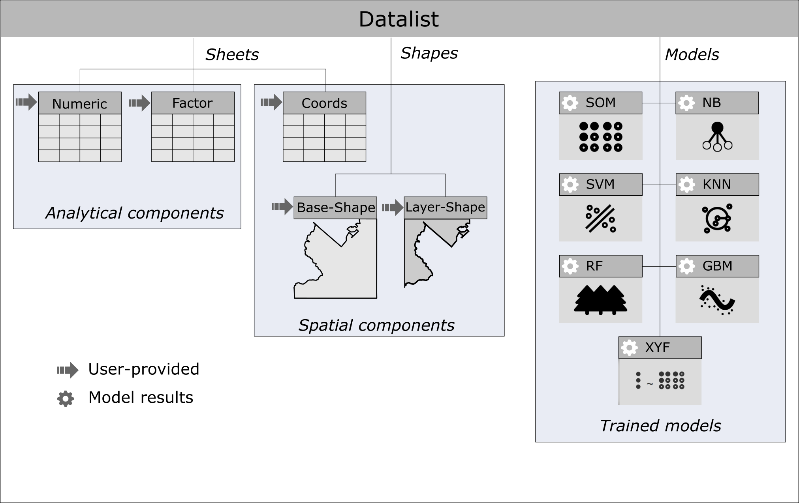
To access all the available analyses in iMESc, you need to create a Datalist by either uploading your own data or using the example data provided. For guidance on uploading sheets and the required attribute formats, as well as how to utilize the example Datalists, please refer to the “Creating a Datalist” section.
5 Main Analyses
The table provided below serves as a convenient reference for the main analyses utilized in iMESc. It displays their locations in the sidebar menu, along with their abbreviations and corresponding packages. For more comprehensive information about each analysis, you can refer to their respective sections in this manual.
| Side Bar menu | Analyses | Abbreviation | Package | Author |
|---|---|---|---|---|
| Unsupervised | Sel-Organizing Maps | SOM | kohonen |
Kohonen (1982) |
| Hierarchical Clustering | HC | factoextra |
Sneath (1957) | |
| K-Means | K-Means | class |
MacQueen (1967) | |
| Supervised | Naive Bayes | NB | klarR |
Duda et al. (2012) |
| Support Machine Vector | SVM | kernlab |
Cortes & Vapnik (1995) | |
| K-Nearest neighbor | KNN | stats |
Fix & Hodges (1951) | |
| Random-Forest | RF | RandomForest |
Breiman (2001) | |
| Stochastic Gradient Boosting | GBM | gbm |
Friedman (2001) | |
| Sel-Organizing Maps | XYF | kohonen |
Shepard (1962) | |
| Descriptive tools | Pearson’s correlation | - | base |
Pearson (1895) |
| Kendell’s correlation | - | base |
Kendall (1938) | |
| Spearman’s correlation | - | base |
Spearman (1904) | |
| Principal Component Analysis | PCA | base |
Pearson (1901) | |
| Nonmetric Multidimensional Scaling | MDS | vegan |
Legendre & Anderson (1999) | |
| Redundancy Analyses | RDA | vegan |
Blanchet et al. (2008) | |
| Piecewise Redundancy Analyses | pwRDA | segRDA |
Vieira (2019) | |
| Spatial tools | Inverse Distance Weighting | idw | - |
Shepard (1968) |
| Mantel Correlogram | - | vegan |
Mantel (1967) |
6 Essentials of Building a Workflow in iMESc
In this section, we will cover the four recurring steps to construct a workflow within iMESc:
6.1 1. Create Datalists Based on Model Specifications
Use pre-processing tools to Create Datalists with their associated attributes based on the chosen analytical method.
For unsupervised methods, only Numeric-Attribute (X) is needed.
For classification models, both Numeric-Attribute (X) and Factor-Attribute (Y) are needed. X and Y can be from the same or different Datalists.
For regression models, X and Y are both Numeric-Attributes from different Datalists.
*For the Naive Bayes Algorithm, Y is always the Factor-Attribute, and X can be either Factor-Attribute or Numeric-Attribute.
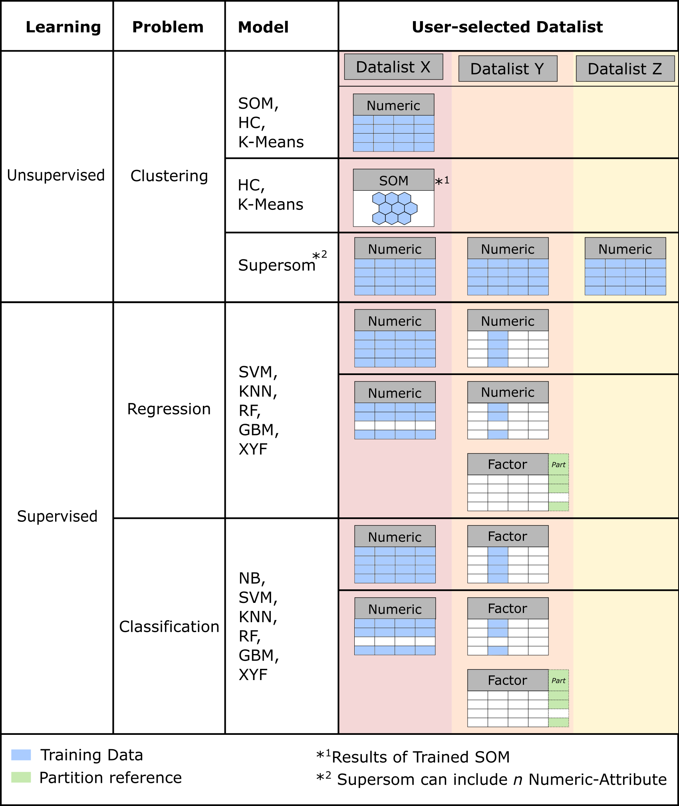
6.2 2. Pre-processing
Use pre-processing tools to handle missing values (Data imputation tool).
Transform the data as needed (e.g., scaling, centering, log transformations), especially for distance-based methods (e.g., PCA, SOM).
Partition the Y data between training and testing for supervised machine learning methods. This action creates a column in the Factor Attribute indicating the partitioning.
6.3 3. Save changes and models
Saving data changes or trained models is a recurring step throughout iMESc. Whenever saving is required, iMESc will indicate this with a flashing-blue disc button.
Saving data changes can be done as new Datalists or overwrite existing ones. Factor, Coords, and Shapes attributes are automatically transferred to the new Datalist. Models previously saved in a Datalist are not transferred.
Trained models are saved within the Datalist used as the predictor (X). After training a model, users have the option to save it as a new model or overwrite an existing one. This action creates a new attribute within the Datalist (e.g., RF-Attribute for Random Forest models).
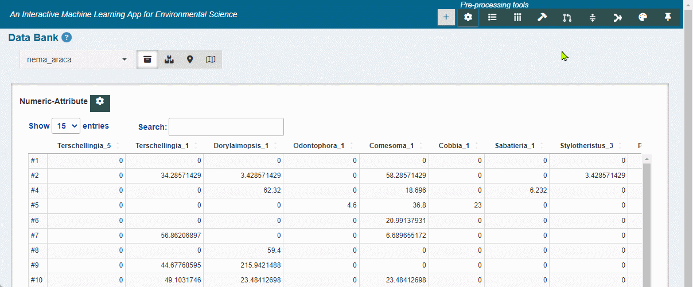
Save changes after a Transformation.

6.4 4. Loading and downloading a save-point
Download a save-point:
Open the pre-processing tools in iMESc.
Click the “Download” button in the “Create a savepoint” section.
The save-point file (.rds) will be downloaded to the computer, capturing your workspace, including all the Datalists and associated models.
Restore a save-point:
Go to the pre-processing tools.
In the “Load a savepoint” section, use “Browse” to upload the save-point file from your computer.
Click “Upload” or “Load” to restore your workspace to that point.
Save-points are incredibly useful for preserving your analysis progress and results. By downloading a save-point, you can conveniently store your work, and later, by uploading it, you can seamlessly continue your analysis from where you left off. This feature ensures that your work remains intact, even if you close the session or access iMESc from a different device.
Using save-points streamlines your workflow and enhances your overall experience with iMESc, providing a reliable way to manage and preserve your analysis outputs and data for future use.
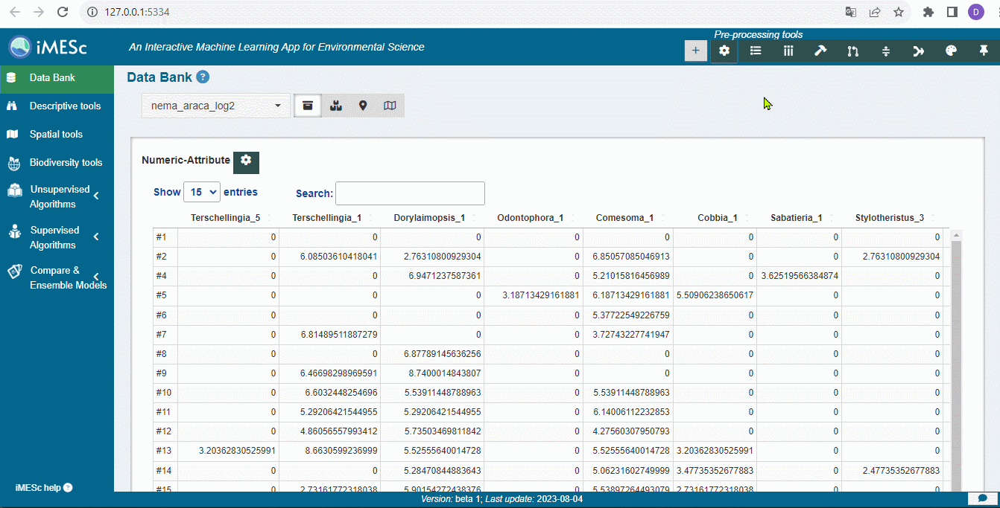
6.4.1 Extracting the Savepoint Results by R Code:
You can extract specific results and attributes from the Savepoint using R code. The iMESc is not required here. To do this, use the following steps:
# Reading the Savepoint
savepoint <- readRDS("savepoint.rds")
savepoint$saved_data # To access all saved Datalists
names(savepoint$saved_data) # To access the names of the saved Datalists
# Accessing a specific Datalist named "datalist_name"
datalist_name <- savepoint$saved_data[['datalist_name']]
datalist_name
# Accessing specific attributes within the Datalist
attr(datalist_name, "factors") # To access the Factor-Attribute
attr(datalist_name, "coords") # To access the Coords-Attribute
attr(datalist_name, "base_shape") # To access the Base-Shape-Attribute
attr(datalist_name, "layer_shape") # To access the Layer-Shape-Attribute
attr(datalist_name, "extra_shape") # To access the Extra-Shapes-Attribute
# To extract saved models
attr(datalist_name, "som") # To access all SOM models saved in the Datalist
attr(datalist_name, "som")[["model_name"]] # To access a saved SOM model named 'model_name'
# To access other models, replace "som" with the corresponding model name:
# 'kmeans' (k-Means), 'nb' (Naive-Bayes), 'svm' (Support-Machine Vector), 'knn'(k-nearest neighbor), 'rf' (Random Forest),
# 'sgboost' (stochastic gradient boosting), 'xyf' (supervised som).Note: Ensure that you specify the correct path and filename of your
save-point file in the readRDS function.
Modify “datalist_name” and “model_name” in the R code to access specific
Datalists and saved models, respectively.
7 Pre-processing Tools
The Pre-processing Tools comprise a suite of functionalities for manipulating and preparing Datalists. These tools assist in refining the data, handling missing values, and generating custom palettes for graphical outputs. Below are the details of each tool:
7.1 Create a Datalist
To begin working with iMESc, you need to create a Datalist, which serves as the foundation for all analytical tasks. Click on “Create Datalist button” to open a modal dialog for Datalist creation. All analytical tasks in iMESc will require a Datalist, which can be uploaded by the user or generated using example data.
7.1.1 Upload
Name the Datalist: Use the text widget to provide a name for the Datalist.
Numeric-Attribute: Upload a .csv or .xlsx file containing the numeric variables. This file is mandatory and should include observations as rows and variables as columns.The first row must contain the variable headings, and the first column should have observation labels. Columns containing characters (text or mixed numeric and non-numeric values) will be automatically transferred to the Factor-Attribute.

Factor-Attribute: Upload a .csv or .xlsx file containing categorical variables. This file should have observations as rows and categorical variables as columns. The first row must contain variable headings, and the first column should have observation labels. If the Factor-Attribute is not uploaded, the observation IDs will be used automatically. This attribute is crucial for labeling, grouping, and visualizing results based on factor levels. It can be replaced at any time with a new one using the “Replace Factor-Attribute” button
Coords-Attribute: Upload a .csv or .xlsx file containing geographical coordinates. This file is optional for creating a Datalist but required for generating maps. The first column should contain the observation labels, the second column Longitude values, and the third column Latitude values (both in decimal degrees). The first row must contain the coordinate headings.
Base-Shape: Upload a single R file containing the polygon shape to be used for generating maps, such as an oceanic basin shape. This optional file can be created using the SHP toolbox available in the pre-processing tools, which allows converting shapefiles (.shp, .shx, and .dbf files) into a single R file.
Layer-Shape: Upload a single R file containing an additional shape layer, such as a continent shape, to be used when generating maps. This optional file can also be created using the SHP toolbox available in the pre-processing tools.
7.1.1.1 Best practices when uploading your sheet
Prepare your data: Use the first row as column headers and the first column as observation labels.
Ensure each label is filled with unique information, removing any duplicated names.
Check for empty cells in the observation label column.
Ensure that the column names are unique; duplicated names are not allowed.
Avoid using cells with blank spaces or special symbols.
Avoid beginning variable names with a number.
Note that R is case-sensitive, so “name” is different from “Name” or “NAME.”
Avoid blank rows and/or columns in your data.
Replace missing values with NA (not available).
7.1.2 Use Example Data
This option allows users to explore the example data available in iMESc . After clicking on “Create a Datalist,” select the “Use example data” radio-button to proceed with Datalist insertion. This action will insert two Datalists from Araçá Bay, located on the southeastern coast of Brazil:
envi_araca: Contains 141 samples with 9 environmental variables.
nema_araca: Contains 141 samples with 194 free-living marine nematode species (southeastern coast of Brazil).
Both Datalists comprise five attributes: Numeric, Factor, Coords-Attribute, Base-Shape, and Layer-Shape. Studies that explored these data area include Corte et al., 2017, Checon et al., 2018 and Vieira et al., 2021.
7.2  Options
Options
This drop-down menu offers the user a range of tools for editing Datalists.
7.2.1 Rename Datalist
Change the name of a selected Datalist to enhance organization and clarity.

7.2.2 Merge Datalists
Combine two or more Datalists by columns or rows. This action affects both Numeric and Factor-Attribute data. When merging by rows, it also impacts the Coords-Attribute. Please note that saved models in one of the Datalists are not transferred to the merged Datalist.
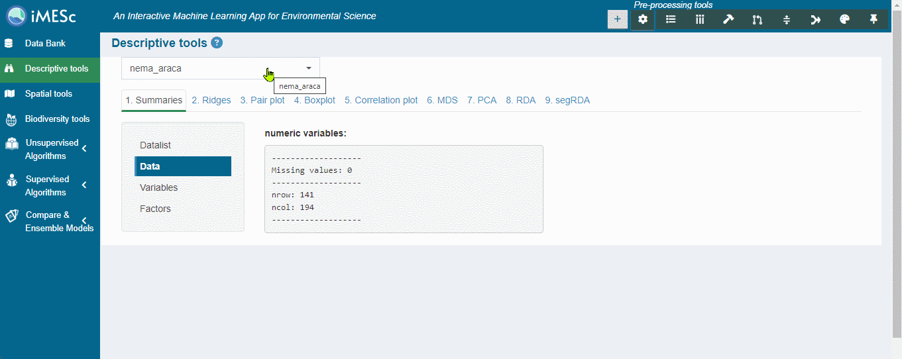
7.2.3 Exchange Factor/Variables
The “Exchange Factors/Variables” functionality in iMESc allows you to seamlessly convert or transfer data between numeric and factor formats. This powerful tool provides flexibility in handling your data and enables smooth transitions between different data types.
From Datalist Selector: Select the source Datalist from which you want to exchange data.
From Attribute Selector: Within the selected Datalist, choose between the Numeric or Factor Attribute that you wish to convert or transfer.
To Datalist Selector: Select the target Datalist where you want to transfer or convert the data.
To Attribute Selector: Within the target Datalist, specify whether you want to convert the data to Numeric or Factor format.
Now, let’s look at the conversion options based on the selected attributes:
7.2.3.1 From Numeric…
To Numeric: This option allows you to copy or transfer the selected numeric variables from the source Datalist to the target Datalist while preserving their numeric format.
To Factor: Convert the selected numeric variables to factors. You can use the “cut” option to categorize the variables into specified bins or levels. If the “cut” option is unchecked, each unique value will become a separate factor level. Additionally, you have the flexibility to edit the names and order of the factor levels.
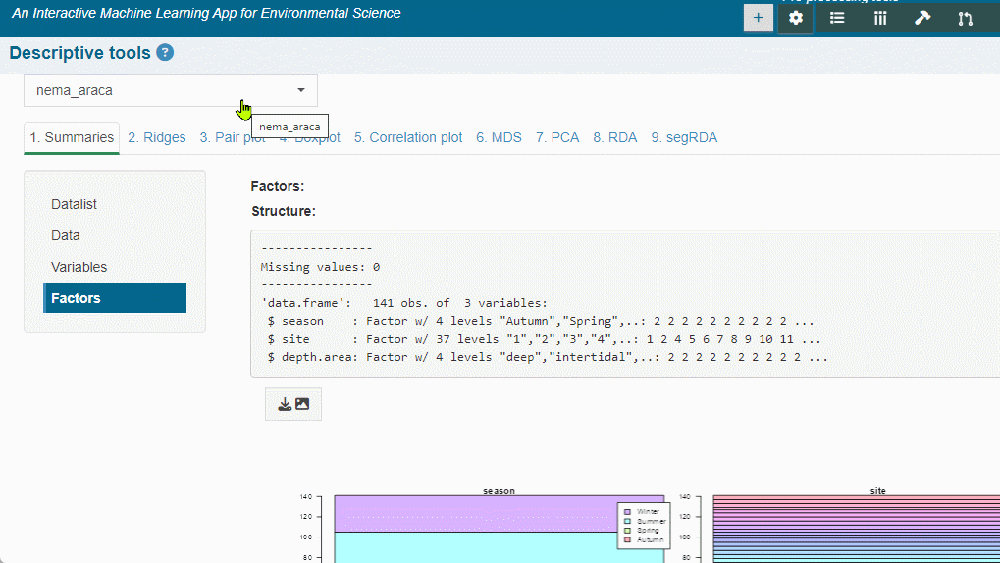
7.2.3.2 From Factor…
To Factor: With this option, you can copy or transfer the selected factors from the source Datalist to the target Datalist, maintaining their original factor format.
To Numeric: This conversion allows you to convert the selected factors to numeric data before copying or moving them. You have two types of conversions available:
Binary: For each factor level, a single binary column is created, where 1 indicates the class of that observation.
Integer: A single column is created, representing the numeric (integer) representation of the factor levels (values).
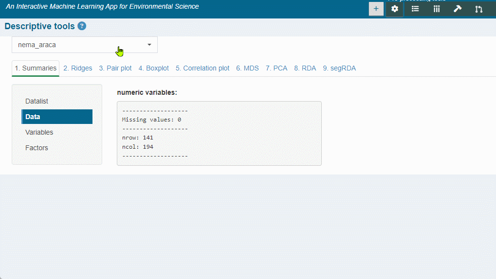
7.2.4 Replace Factor-Attribute
The “Replace Factor-Attribute” option allows users to update existing Factor-Attributes within a Datalist by replacing them with new data from a CSV file.

7.2.5 Edit Datalist Columns
The “Edit Datalist Columns” feature enables users to modify the names of columns, including both Numeric-Attributes and Factor-Attributes, within a Datalist.
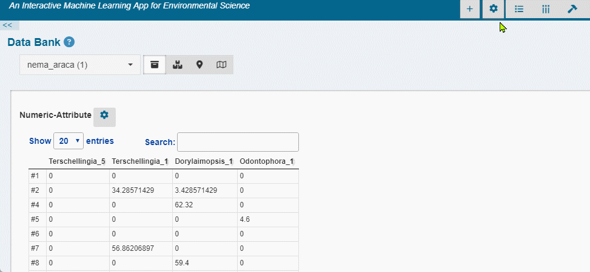
7.2.6 Edit/Merge models
This functionality allows you to:
Edit model names: Select the target Datalist, the model type (e.g., random forest), enter a new name, and confirm the changes.
Merge models: Select the models and the target Datalist. The selected models will be copied to the target Datalist, preserving the original models. In case of duplicate model names, iMESc automatically differentiates them by adding ‘.1’, ‘.2’, and so on.

7.2.7 Build IDs/Columns & Formula
Creates columns or build IDs in the Numeric or Factor-Attribute using three options:
“Find & Replace”: The user selects a target variable/factor, specifies a pattern to find, and another pattern to replace. Then, the user can create a new column using the results. This option employs the gsub function from R base to find the specified pattern and replace it with the desired one throughout the observations.

“Concatenate”: The user selects multiple target variables/factors, and like the Concatenate function in Excel, iMESc merges them. The user can build a new column or use the concatenated results as IDs for observations. This functionality in iMESc uses the paste0 function from R base.
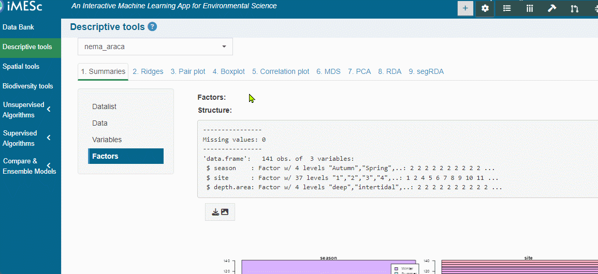
“Apply formula”: Allows the user to apply custom formulas. The user selects multiple target variables to be available in the bucket and builds a formula by dragging the targets and formula elements (e.g.,
(,),+,-,*, etc.). The user can then create a new column with the formula results.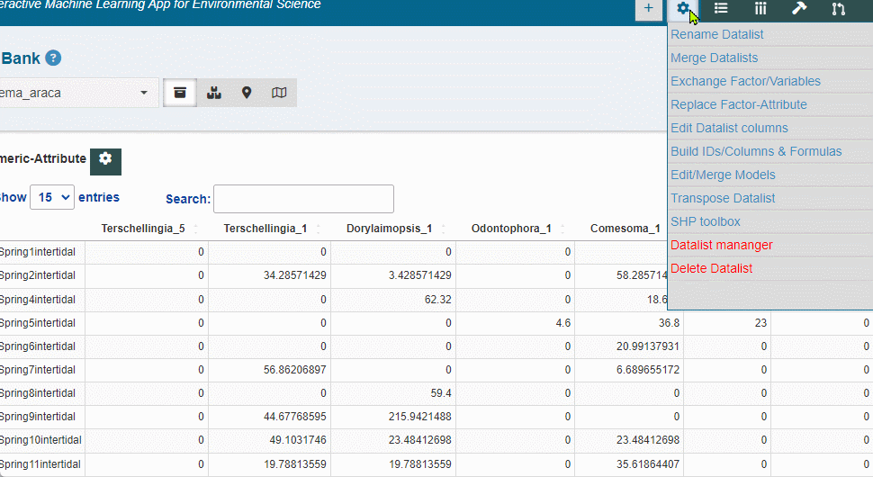
7.2.8 Transpose a Datalist
This tool allows the rotation of a Datalist (Numeric and Factor) from rows to columns.
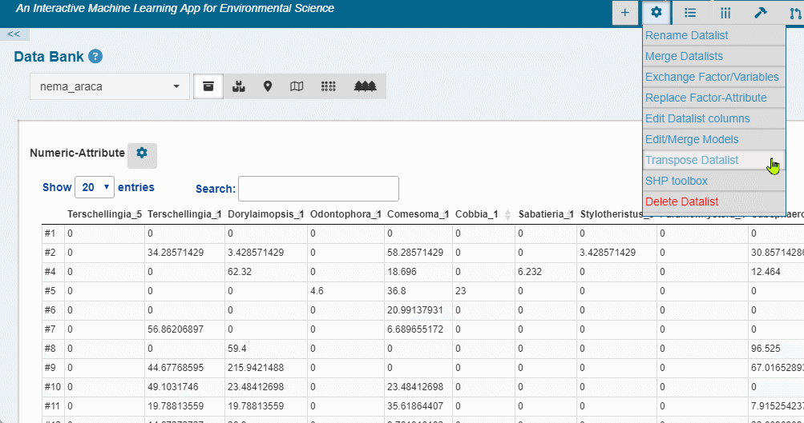
7.2.9 SHP toolbox
This toolbox allows the creation of Base-Shapes, Layer-Shapes and Extra shapes.
- Upload shape files* at once
- Select the shape attribution: Base-Shape, Layer-Shape or Extrashape
- Select the Target Datalist
- Include the shape or download a single R file to be uploaded later when creating a Datalist.

7.2.9.1 shape files*
Shapefiles are a simple, nontopological format for storing geometric location and attribute information of geographic features. The shapefile format defines the geometry and attributes of geographically referenced features in three or more files with specific file extensions that should be stored in the same project. It requires at least three files:
.shp: The main file that stores the feature geometry.
.shx: The index file that stores the index of the feature geometry.
.dbf: The dBASE table that stores the attribute information of features.
There is a one-to-one relationship between geometry and attributes, which is based on record number. Attribute records in the dBASE file must be in the same order as records in the main file.
Each file must have the same prefix, for example: basin.shp, basin.shx, and basin.dbf
7.2.10 Datalist Manager
Manage saved Datalists and their attributes. The manager displays the size of each Datalist, and options for deleting attributes and downloading dataframes.

7.2.11 Delete Datalists
Remove a Datalist entirely.

7.3  Filter observations
Filter observations
This tool allows manipulating numeric attributes by filtering observations based on certain criteria. The available options are:
Na.omit: Remove all cells that are empty (NAs) by checking this box.
Match with: If checked, constrain the target Datalist to observations (IDs) from another Datalist.
Filter by Factors: After clicking this option, a Filter Tree will be displayed, structured by the levels of the Factor-Attribute. You can click on the nodes to expand and select the factor levels. This function is available for factors with fewer than 100 levels.
Individual Selection: After clicking this option, checkboxes will be displayed to select observations using Datalist IDs.
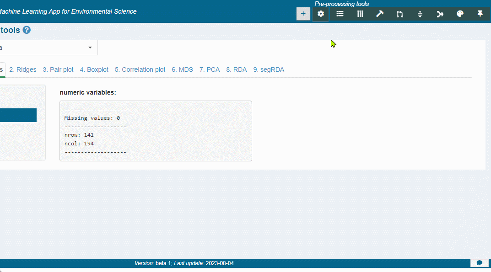
7.4  Filter variables
Filter variables
This tool allows manipulating the Numeric-Attribute by filtering variables. The available options for value-based removal are:
Abund<: Remove variables with a total value less than x-percent of the total sum across all observations. This is useful to exclude variables with low overall contribution.
Freq<: Remove variables that occur in less than x-percent of the total number of observations. This is helpful when you want to exclude rarely occurring variables.
Singletons: Remove variables that occur only once in the dataset. This option is relevant for counting data and helps eliminate variables with no meaningful variation.
Individual Selection: This option allows you to manually select specific variables to keep or remove from the dataset, using their column names.
Correlation-based removal: This option uses the
findCorrelationfunction from the ‘caret’ package. It considers the absolute values of pair-wise correlations between variables. If two variables have a high correlation, the function looks at the mean absolute correlation of each variable, considering the whole data, and removes the variable with the largest mean absolute correlation. Theexactargument is set to TRUE, meaning that the function re-evaluates the average correlations at each step.nearZeroVar removal: This option uses the
nearZeroVarfunction from thecaretpackage. It identifies and removes near zero variance predictors. Predictors with near-zero variance have either zero variance (only one unique value) or very few unique values relative to the number of samples, with a large frequency ratio between the most common and second most common values. Removing such predictors can help eliminate features that do not contribute much information.
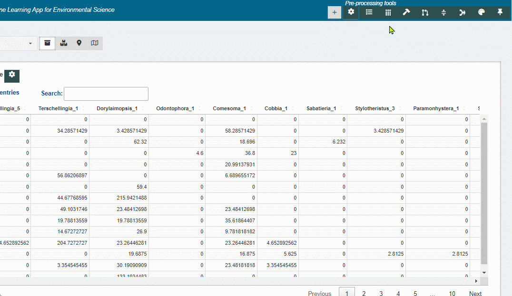
7.5  Transformations
Transformations
The “Transformations” tool enables preprocessing of the Numeric-Attribute using various transformation methods.
7.5.1 Transformation
Provides a wide range of transformation options:
None: No Transformation. Select this option if you do not want to apply any transformation to the Numeric-Attribute.
Log2: Logarithmic base 2 transformation as suggested by Anderson et al. (2006). It follows the formula log_b (x) + 1 for x > 0, where ‘b’ is the base of the logarithm. Zeros are left as zeros. Higher bases give less weight to quantities and more to presences, and logbase = Inf gives the presence/absence scaling. Note that this is not log(x+1).
Log10: Logarithmic base 10 transformation as suggested by Anderson et al. (2006). It follows the formula log_b (x) + 1 for x > 0, where ‘b’ is the base of the logarithm. Zeros are left as zeros. Higher bases give less weight to quantities and more to presences, and logbase = Inf gives the presence/absence scaling. Note that this is not log(x+1).
Total: Divide by the line (observation) total. This transformation scales the values based on the total sum of each observation.
Max: Divide by the column (variable) maximum. This transformation scales the values based on the maximum value of each variable.
Frequency: Divide by the column (variable) total and multiply by the number of non-zero items, so that the average of non-zero entries is one. This transformation scales the values based on the frequency of occurrence.
Range: Standardize column (variable) values into the range 0 … 1. If all values are constant, they will be transformed to 0. This transformation brings the values to a common scale.
Pa: Scale x to presence/absence scale (0/1). This transformation converts the values to binary (0 for absence, 1 for presence).
Chi.square: Divide by row sums and square root of column sums and adjust for the square root of the matrix total. This transformation is relevant for specific statistical analyses.
Hellinger: Square root of method = total. This transformation is used for certain distance calculations.
Sqrt2: Square root transformation. This transformation takes the square root of each value.
Sqrt4: 4th root transformation. This transformation takes the 4th root of each value.
Log2(x+1): Logarithmic base 2 transformation (x+1). This is a variant of the log2 transformation that adds 1 before taking the logarithm.
Log10(x+1): Logarithmic base 10 transformation (x+1). This is a variant of the log10 transformation that adds 1 before taking the logarithm.
BoxCox: Designed for non-negative responses. Boxcox transforms non-normally distributed data to a set of data that has an approximately normal distribution. The Box-Cox transformation is a family of power transformations.
Yeojohson: Like the Box-Cox model but can accommodate predictors with zero and/or negative values. This is another family of power transformations.
ExpoTrans: Exponential transformation. This transformation applies the exponential function to each value.
7.5.2 Scale and Centering
This tool uses the function scale from
R base for scaling and centering operations. You have the following
options:
Scale: If checked, scaling is done by dividing the (centered) columns of “x” either by their standard deviations (if center is TRUE) or by the root mean square (if center is FALSE).
Center: If checked, centering is done by subtracting the column means (omitting NAs) of “x” from their corresponding columns
7.5.3 Random Rarefaction
- This tool generates one randomly rarefied community given a sample size. If the sample size is equal to or larger than the observed number of individuals, the non-rarefied community will be returned.

7.6  Data imputation
Data imputation
This tool provides methods for completing missing values with values
estimated from the observed data. It is available only for Datalists
that contain missing data either in the Numeric-Attribute or in the
Factor-Attribute. The function preProcess
from the caret package is used for
imputation. To impute missing values, follow these steps:
Choose the Target-Attribute.
Pick a Method (described below).
Click the blue “Flash” button. The “Save Changes” dialog will automatically pop-up.
Save the Datalist with imputed values as a new Datalist or replace an existing one.

Methods for imputation:
Median/mode: Numeric-Attribute columns are imputed with the median, and Factor-Attribute columns are imputed with the mode.
Knn: k-nearest neighbor imputation is only available for the Numeric-Attribute. It is carried out by finding the k closest samples (Euclidean distance) in the dataset. This method automatically centers and scales your data.
Bagimpute: Only available for the Numeric-Attribute. Imputation via bagging fits a bagged tree model for each predictor (as a function of all the others). This method is simple, more accurate, and accepts missing values, but it has a much higher computational cost.
MedianImpute: Only available for the Numeric-Attribute. Imputation via medians takes the median of each predictor in the training set and uses them to fill missing values. This method is simple, fast, and accepts missing values but treats each predictor independently, which may lead to inaccuracies.
7.7  Data partition
Data partition
This tool adds a partition as a factor in the Factor-Attribute. It
uses the createDataPartition function from
the caret package. Users can specify the
percentage of observations to be used for the test and choose between
the methods:
Random Sampling: simple random sampling is used.
Balanced Sampling: This option conducts random sampling within the levels of a chosen factor, ensuring a balanced sampling distribution across the factor levels.

Data partitioning is a critical step in evaluating machine learning models. Creating distinct training and testing sets allows for accurate assessment of the model’s performance on unseen data, avoiding issues like overfitting and obtaining more reliable performance metrics.
7.8  Aggregate
Aggregate
The “Aggregate” tool utilizes the
aggregate function from R base. This
process involves aggregating individual cases of the Numeric-Attribute
based on a grouping variable, which can be selected factors.
The tool offers various calculation options to aggregate the data:
Mean: Calculates the mean of each group (selected factor).
Sum: Calculates the sum of values for each group (selected factor).
Median: Calculates the median of each group (selected factor).
Var: Calculates the variance of each group (selected factor).
SD: Calculates the standard deviation of each group (selected factor).
Min: Retrieves the minimum value for each group (selected factor).
Max: Retrieves the maximum value for each group (selected factor).

7.9  Create Palette
Create Palette
The “Create Palette” tool utilizes the
colourpicker tool from the
colourpicker package, enabling users to
interactively select colors for their palette. Subsequently, iMESc
employs colorRampPalette to generate
customized color palettes suitable for graphical outputs.

7.10  Savepoint
Savepoint
Create: create a Savepoint, which is a single R object to be downloaded and that can be reloaded later or shared to restore workspace.
Restore : Upload a Savepoint (.rds file) to restore the workspace.

7.11 Track changes
This group of panels appears when using the functionalities provided
by the pre-processing toolbar 


 . Users can track changes in real-time through summary
panels and histograms. The Missing Values panel is particularly
important for checking the number of missing values per variable.
. Users can track changes in real-time through summary
panels and histograms. The Missing Values panel is particularly
important for checking the number of missing values per variable.
Changes: This panel displays the current and previous changes made during the pre-processing process.
Summary: The Summary panel shows the number of missing values, rows, and columns, as well as the minimum, average, median, and maximum values of the data.
Data: This panel presents a histogram of all numerical values in the dataset.
colSums: The colSums panel displays a histogram of column sums.
rowSums: The rowSums panel displays a histogram of row sums.
Missing Values: In the Missing Values panel, users can see the number of missing values per variable.

8 Sidebar-menu
8.1  Data Bank
Data Bank
The Data Bank module is designed for data visualization and
downloading purposes. It uses the DT package to render
sheets with interactive tables. When using the Numeric or
Factor-Attribute buttons, users can edit the cells of their sheets.However, it’s important to use it with caution, as the
changes made are instantaneously applied and cannot be
undone.
The available buttons in the Data Bank are as follows:
 Numeric-Attribute: Shows the sheet for
the Numeric-Attribute data.
Numeric-Attribute: Shows the sheet for
the Numeric-Attribute data.
 Factor-Attribute: Displays the sheet for
the Factor-Attribute data.
Factor-Attribute: Displays the sheet for
the Factor-Attribute data.
 Coords-Attribute: Shows the sheet for the
Coords-Attribute data.
Coords-Attribute: Shows the sheet for the
Coords-Attribute data.
 Shapes (if any):
Shapes (if any):
Base-Shape: plot the base_shape
Layer-Shape: plot the Layer-Shape
Extra-Shapes: plot the Extra-Shapes
Additional buttons will appear dynamically based on the presence of saved models in the target Datalist:
 SOM-Attribute: displays the summary of
SOM models (unsupervised and supervised) (if saved in the target
Datalist).
SOM-Attribute: displays the summary of
SOM models (unsupervised and supervised) (if saved in the target
Datalist).
 NB-Attribute: displays the summary of NB models
NB-Attribute: displays the summary of NB models
 KNN-Attribute: displays the summary of KNN models
KNN-Attribute: displays the summary of KNN models
 SVM-Attribute: displays the summary of SVM models
SVM-Attribute: displays the summary of SVM models
 RF-Attribute: displays the summary of RF models
RF-Attribute: displays the summary of RF models
 GBM -Attribute: displays the summary of
GBM models
GBM -Attribute: displays the summary of
GBM models
XYF-Attribute: displays the summary of XYF models

8.2  Descriptive tools
Descriptive tools
This module provides multiple tabs for descriptive analysis and visualization of the data.
8.2.1 Summary
The Summary tab consists of three buttons:
Datalist: Shows the structure of the Datalist.
Data: Displays the number of rows, columns, and missing values in the Numeric-Attribute.
Variable: Provides summary statistics and histograms for each variable in the Numeric-Attribute.
Factors: Presents a summary of the Factor-Attribute and a stacked plot with the count of Factor levels.
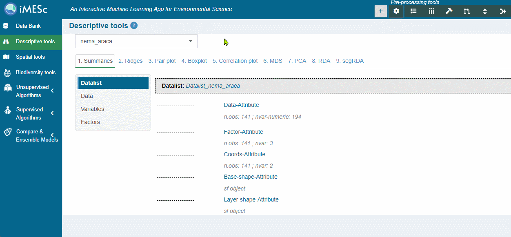
8.2.2 Ridges
This functionality plots the Numeric-Attribute as ridges lines grouped by a Factor.
Ridge plots are partially overlapping line plots that create the impression of a mountain range. They are useful for visualizing changes in distributions over a gradient. This function uses the geom_ridgeline function from the ggridges package.

8.2.3 Pairplot
The pair plot feature in iMESc utilizes the ggpairs
function from the GGally package to create a matrix of
plots based on selected variables from the Numeric-Attribute, and
optionally one additional categorical variable from the Factor-Attribute
to group the ridges.
In a pair plot, each variable is plotted against all other variables in the dataset, resulting in a matrix of scatterplots showing the relationship between each pair of variables.
Users have the flexibility to customize the display in each panel according to their preferences:
Upper Panel: Users can opt to display correlations or correlations per group or none.
Lower Panel: Options include displaying points, points colored per group, or no points at all.
Diagonal Panel: Users can choose from several options, such as Density, Density per group, Histogram, Histogram per group, or none.
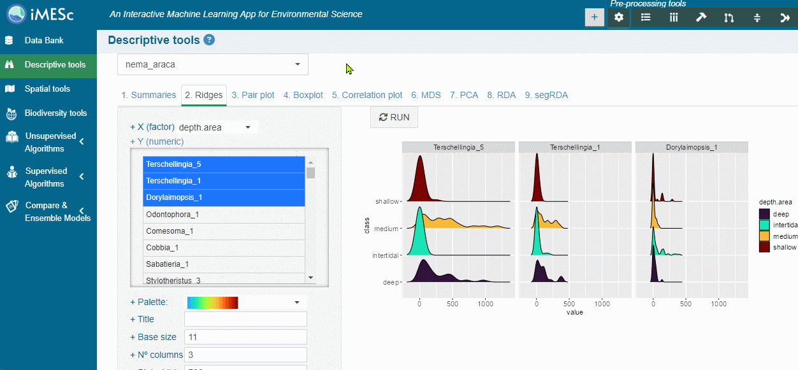
8.2.4 Boxplot
- The Box Plot tab allows users to create boxplots with numerous graphical options.

8.2.5 Correlation plot
- The Correlation Plot tab uses the
heatmap.2function fromgplotspackage. Users can choose the correlation method (e.g., Pearson, Spearman) and filter correlations based on a cutoff value (filtering done using the findCorrelation function from caret). All arguments available in this function are accessible in iMESc. For a detailed description of all arguments, users can refer to the documentation of theheatmap.2function.
8.2.6 MDS
- The MDS (Nonmetric Multidimensional Scaling) tab uses the metaMDS function from the vegan package. It uses default arguments, with user options to choose the distance metric (e.g., Bray-Curtis, Euclidean, Jacquard). Users can interact with various graphical options, including coloring observations by a factor from the associated Factor-Attribute.

8.2.7 PCA
- The PCA tab utilizes the prcomp function from R base. We recommend scaling the data before conducting PCA analysis. Users can interact with several graphical options, including coloring observations by a factor from the associated Factor-Attribute.

8.2.8 RDA
The RDA tab employs the rda function from the vegan package. It requires at least two Datalists to build a Y~X model. The results are presented in two panels:
Plot: Offers several graphical options, including coloring observations by a factor from the associated Factor-Attribute.
Summary: Provides results of the rda model, such as variable importance (constrained and unconstrained), variable and observation scores, linear constraints, and biplot.

8.2.9 segRDA
The segRDA tab implements the segRDA workflow (Vieira et al., 2019) for modeling non-continuous linear responses of ecological data. The routine consists of three panels:
SMW: Split Moving Windows along ordered data.
DP: Dissimilarity Profile of the SMW results for identifying breakpoints.
pwRDA: Performs a piece-wise redundancy analysis using specified breakpoints. The results are presented in the same way as in the RDA panel.

8.3  Spatial Tools
Spatial Tools
The Spatial Tools module is designed for spatialization and requires the Coords-Attributes attached to the chosen Datalist.
After selecting a Datalist, you can choose an Attribute (Numeric or Factor) and then the target variable. Optionally, filters can be applied to plot observations corresponding to a specific factor level.
The module offers various map types for spatial representation:

8.3.1 Discrete
In discrete maps, variables/factors are represented as symbols on the map. When the target data is a Numeric-Attribute, the scale option (default) is available, where the chosen symbol is represented as a point that varies in size and color according to the scale of the target data. Alternatively, points can be colored based on a selected factor.
For more advanced visualization, 3D/4D options are also available for discrete maps. In 3D, the target variable is plotted along the Z-axis, which can be further colored by an additional selected factor.
Additionally, the module provides a Mantel correlogram for performing spatial statistics.

8.3.2 Interpolation, Raster and Stack
| Interpolation | Interpolation maps involve interpolating variables/factors on a regular grid defined by the user. For Numeric Attribute mapping, Inverse Distance Weighting (IDW) is used, while for Factor Attribute mapping, k-nearest neighbors (KNN) interpolation is employed. Both interpolation types come with tuning parameters for fine-tuning the interpolation process. |
| Raster | The raster map option performs simple rasterization at the coordinate’s resolution. This option is available only for mapping Numeric-Attribute data. |
| Surface* | The Surface* option draws a perspective plot of a surface over the coordinates plane. The surface passes through the Z values corresponding to all pairs of coordinates. Additionally, the surface can be colored based on a selected factor (4D). |
| Stack* | Stack* allows the combination of multiple discrete/interpolated/rasterized planes (for a common geographic area) to represent an integrated map. The saved maps act as layers in the stack, and their position along the Z-axis can be defined by the user. |
*Require at least two saved maps (interpolation and/or rasters ).
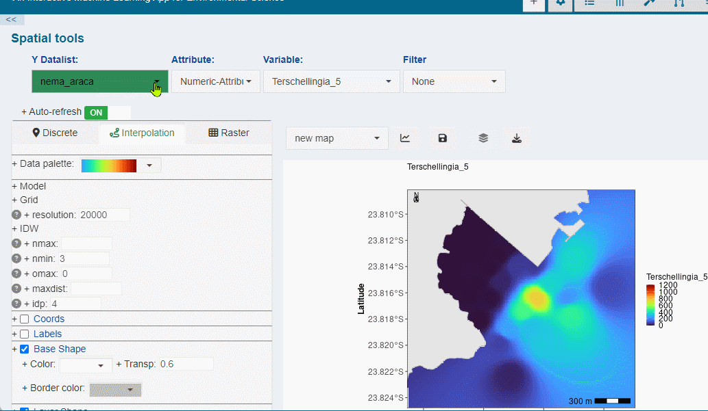
8.3.2.1 IDW tuning parameters
nmax: For local kriging, this parameter specifies the number of nearest observations that should be used for a kriging prediction or simulation, where nearest is defined in terms of the spatial locations. If empty (default), all observations are used.
nmin: If the number of nearest observations within a distance
maxdistis less thannmin, a missing value will be generated; seemaxdist.omax: Maximum number of observations to select per quadrant; only relevant if
maxdisthas been defined as well.maxdist: Only observations within a distance of
maxdistfrom the prediction location are used for prediction or simulation. If combined withnmax, both criteria apply.
8.3.2.2 KNN tuning parameters
- k -The number of neighbors considered for KNN interpolation.
8.4  Biodiversity Tools
Biodiversity Tools
The Biodiversity Tools module provides a collection of classic ecological diversity metrics. These metrics are widely used to quantify the biological diversity of a specific area or dataset.
To use the Biodiversity Tools, the user selects a target Datalist containing the necessary data. The module then computes the selected diversity metrics from the Numeric_Attribute and generates a dataframe with the calculated results. The user has the option to save the results as a new Datalist, which will retain the Factor, Coords, and Shapes-Attributes from the target Datalist.
8.4.1 Biological Diversity Indexes
| Abrev | Index | Description | Formula |
|---|---|---|---|
| N | Abundance | Total number of individuals | |
| S | S | the total number of species in each observation | |
| margalef | margalef: | The total number of species weighted by the logarithm of the total number of individuals | \[ margalef=\frac{S-1}{lnN} \] |
| D | Simpsom diversity | the probability that two individuals drawn at random from an infinite community would belong to the same species | \[ D=\sum{p^2} \] |
| H | H. Shannon diversity | This index considers both species richness and evenness. The uncertainty is measured by the Shannon Function ‘H’. This term is the measure corresponding to the entropy concept defined by | \[ H=\sum_{n = 1}^{n}{(p_i * lnp_i)} \] |
| Hlog2 | This term is the measure corresponding to the entropy concept defined by: | \[ H_{log_2}=\sum_{n = 1}^{n}{(p_i * log_2p_i)} \] |
|
| Hlog10 | Shannon Function H on base 10 | This term is the measure corresponding to the entropy concept defied by: | \[ H_{log_{10}}=\sum_{n = 1}^{n}{(p_i * log_{10}p_i)} \] |
| J | Evenness | Measure of how different the abundances of the species in a community are from each other. The Shannon evennes is defined by: | \[ J=\frac{H}{ln(S)} \] |
| DOMrel | Relative dominance | A simple measure of dominance where Ni , the abundance of the most abundant species is divided by N: | \[ Dom_{rel}=\frac{N_1}{N} \] |
| Logskew | Skewness | The third moment of a probability distribution, measuring asymmetry. Right skew (positive numbers) indicates more probability on the right (abundant) side. Left skew (negative numbers) indicates more probability on the left side. All species abundance distributions are strongly right skewed on an arithmetic scale, so the more interesting measure is skew on the log scale: | \[ LogSkew = \frac{\sum {\frac{(log(n_i)-\mu)^3}{S}}}{[\sum {\frac{(log(n_i)-\mu)^2}{S}}]^\frac{3}{2} \frac{S}{(S-2)} \sqrt{[\frac{(S-1)}{S}]}} \] |

8.4.2 Niche Analysis
The Niche Analysis is performed using the niche function
from the ade4 package (Dray and Dufour, 2007). It involves
running a Principal Component Analysis (PCA) on the environmental table
and associating the resulting table of row profiles with the
corresponding faunistic table. This association provides the average
position (i.e., niche position) of each species along the ordination
axes, allowing researchers to understand the ecological niche of each
species in relation to the environmental factors.
The analysis also includes the Optimal Niche Position (OMI) analysis, which provides additional insights into the species’ niches. It calculates the niche breadth value, representing the total variance of the environmental table weighted by the species’ abundances. This information helps researchers understand the range of conditions under which each species thrives.
Moreover, iMESc enables the extraction of the niche position (NP), environmental boundaries (EBs), and niche breadths (NBs) of species along the principal components (Vieira et al., 2019). This detailed analysis allows for a deeper understanding of how species interact with the environment and their ecological preferences.
For more in-depth information about the calculation of niche parameters, researchers can refer to the work of Dolédec et al. (2000). The Niche Analysis is a valuable tool for ecologists and environmental scientists to study species-environment relationships and gain valuable insights into species distributions and their ecological roles within a given ecosystem.
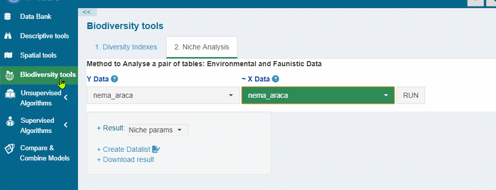
8.5  Unsupervised Algorithms
Unsupervised Algorithms
8.5.1  Self-Organizing maps
Self-Organizing maps
The Self-Organizing Maps (SOM) module in iMESc offers users powerful
functionality to perform Self-Organizing Maps analysis on their target
Datalists. This analysis is implemented using the
supersom function from the
kohonen R package. By default, the method
trains a single layer, but users can train multiple layers by activating
the “supersom” button and fine-tune the distance for each layer, as well
as adjust the weights for each layer. The SOM module is conveniently
organized into three panels: Training, Results, and Predict, providing
an intuitive and efficient workflow for analyzing and visualizing
data.
8.5.1.1 1. Training
| 1. Set the grid | 2. Set the training parameters |
|---|---|
Users can specify the grid of units, of a specified size and topology. The app provides an automatic suggestion for the grid size (xdim, ydim) based on Suggested toplogy*
|
Set the training parameters of SOM:
|

8.5.1.2 Suggested topology*
Checkbox to automatically calculate the number of map nodes and the side length ratio as follows (Vesanto, 2000 ):
Determine the number of map nodes using the heuristic recommendation, \[ M=5\sqrt{N} \]where N is the number of observations in the input data set ( Vesanto, 2000 )
Determine the eigenvectors and eigenvalues in the data from the autocorrelation matrix
Set the ratio between the two sides of the grid equivalent to the ratio between the two largest eigenvalues, and
Scale the side lengths so that their product (xdim * ydim) is as close as possible to the number of map units determined above.
8.5.1.3 2. Results
| 2.1. Parameters | In this tab users can access a comprehensive sheet containing quality measures and training parameters used during the SOM analysis. This sheet offers an overview of the model’s performance and the specific settings applied during training. Users have the option to download this information in .csv and .xlsx formats for further analysis. Additionally, the trained model itself can be downloaded as an .rds file for future reference and usage. |
| 2.2. Changes | The Changes tab showcases a plot representing the mean distance to the closest codebook vector during the training process. By observing the changes in the distance metric over time, users can gain insights into the model’s convergence and refinement of its representations. This understanding is essential in evaluating the model’s stability and overall performance. |
| 2.3. Couting | Within the Counting tab, users can explore a plot displaying the number of objects mapped to individual units on the SOM. Units with a higher number of mapped objects are represented with darker shades, while empty units are depicted in gray. This visualization enables users to identify regions of high-density and low-density data points on the SOM map. |
| 2.4. BMUs | In the BMUs tab, users can examine the mapping of observations on the SOM. The tab presents a Variable factor map*, illustrating the influence of variables on the units’ locations and clustering. Users can choose from various graphical options to customize the plot to meet their specific requirements. Users can specify the background type as “None” (solid color), “U-Matrix” (highlighting units near class boundaries with higher average distances to their neighbors), and “Property” (depicting unit properties in color code, offering insights into variable similarity across units). |
| 3.5. Network plot | The Network Plot tab offers a visualization of the final positions of trained neurons, with vertices representing the distance between neighbors. This plot provides a clear view of the topological relationships between different units on the SOM map. |
8.5.1.4 Quality measures*
Metrics calculated using the aweSOM package (Boelaert
J., et. al, 2022).
| Quantization error | Average squared distance between the data points and the map prototypes to which they are mapped. Lower is better. |
| Percentage of explained variance | Similar to other clustering methods, the share of total variance that is explained by the clustering (equal to 1 minus the ratio of quantization error to total variance). Higher is better. |
| Topographic error | Measures how well the topographic structure of the data is preserved on the map. It is computed as the share of observations for which the best-matching node is not a neighbor of the second-best matching node on the map. Lower is better: 0 indicates excellent topographic representation (all best and second-best matching nodes are neighbors), 1 is the maximum error (best and second-best nodes are never neighbors). |
| Kaski-Lagus error | Combines aspects of the quantization and topographic error. It is the sum of the mean distance between points and their best-matching prototypes, and of the mean geodesic distance (pairwise prototype distances following the SOM grid) between the points and their second-best matching prototype. |
| Neuron Utilization | The percentage of neurons that are not BMU of any observation |
8.5.1.5 Variable factor map*
The Variable Factor Map (VFM) is a chart that closely resembles the variable factor map obtained from Principal Component Analysis (PCA).
To generate the VFM, the weighted correlation for each variable is computed using the coordinates (x, y) of the neurons and their corresponding weights (number of instances). The codebook vectors of SOM cells represent estimations of the conditional averages. Calculating the variance for each variable allows for the estimation of the between-node variance of that variable, thus determining its relevance within the SOM.
When creating the VFM, users have two options based on the
npic parameter (number of variables to display):
Most Important Correlations:This option returns thenpicvariables with the highest variance. For example, ifnpicis set to 5, the VFM will display the top 5 variables with the highest variance or correlation, depending on the chosen option. These variables are considered the most influential in explaining the variability within the data on the SOM.Clock-wise Correlations:This option also returns the “npic” variables with the highest correlation when considering the different directions of the codebook. By analyzing correlations along various directions, it helps identify variables that exhibit strong correlations with specific orientations on the SOM.
8.5.1.6 3. Predict
This tab is intended to generate predictions based on either the Training Datalist or using a New Datalist
3.1 Results: This section displays several prediction results, which can be downloaded as .csv or .xlsx files. For the option “Codebook and New data (X),” it is also possible to create a Datalist from these results. |
|
3.2. Performance In this tab, various performance metrics are available, including Root-mean square (RMSE), R-squared, and Mean Absolute Error (MAE). Options include: |
Overall Performance: uses all the observations and variables in the dataset. Performance by Observation: evaluates the predictive performance on a per-observation basis. Performance by Variable: assesses the predictive performance for each variable (feature) in the Datalist being predicted. |
3.2. BMUs |
8.5.2  Hierarchical clustering
Hierarchical clustering
Hierarchical Clustering (HC) analysis is performed on the Numeric-Attribute or SOM-codebook (if any saved SOM model). The process starts by assigning each object to its own cluster and then iteratively joins the two most similar clusters until there is only one cluster left. At each stage, the distances between clusters are recomputed using the Lance–Williams dissimilarity update formula based on the specific clustering method chosen.
iMESc utilizes the hcut function, part of the
factoextra package, to implement HC analysis. The HC
analysis can be performed on the Numeric-Attribute or on the codebook
obtained from a saved SOM model. Users have the option to choose the
specific clustering method that suits their analysis needs.
The HC analysis results can be saved using the flashing blue button in tabs 3 and 4, enabling users to conveniently capture and analyze their clustering results for further exploration or other analytical tasks in iMESc. This feature enhances the usability of iMESc and provides users with a seamless workflow for conducting hierarchical clustering and utilizing the clustering outcomes in various downstream analyses.
Users can customize several parameters in iMESc:
8.5.2.1 Training
| Training Datalist: | Users can select the Datalist containing the data to be clustered. |
| Clustering target: | Choose between Numeric-Attribute or SOM-codebook (if any saved SOM model). |
| HC Function | Select the clustering function. |
| Distance* | Choose the distance measure to be used. |
| SOM-codebook | If clustering the SOM codebook, select the specific SOM model to be clustered. |
| Method |
|
*Only available when clustering target is a Numeric-Attribute. When target is the SOM codebook, the distance metric is set to the one used when training the SOM.
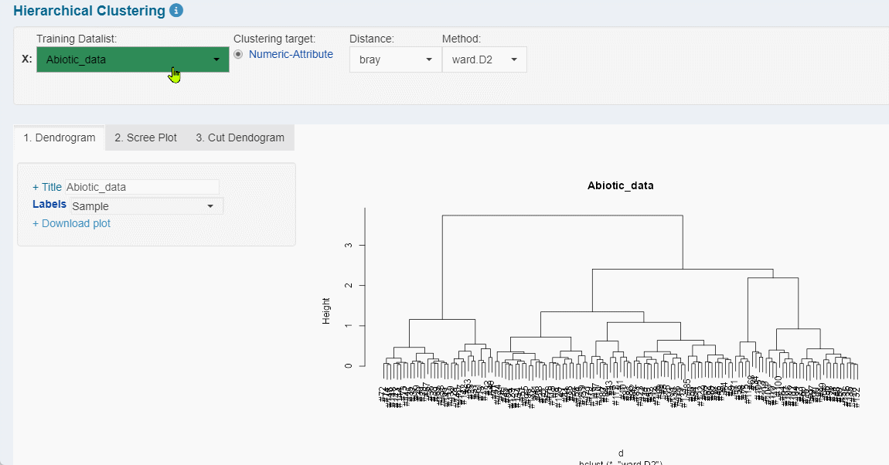
8.5.2.2 Results
The HC results are presented in the following panels:
|
A graphical representation of the hierarchical clustering structure, displaying how clusters are merged and their distances. |
|
This plot helps determine the optimal number of clusters. Users can inspect the curve to find the point where adding another cluster doesn’t significantly improve the clustering performance. The split moving window analysis toolbox can aid in identifying the “elbow” point where the curve changes drastically. |
|
Generates cluster assignments of observations after cutting the tree. The user can save the clusters assignments in the Factor-Attribute of the current Datalist using a save flashing blue button. generates the cluster assignement of the observations after cutting
the tree. |
|
This tab maps the training data and visualizes the SOM units that would be clustered together. Users can also map new data, which can be chosen from any Datalist containing the same variables used to train the SOM. |
|
Generates a scree plot using either the Dendogram Height or the Within Sum of Squares as metrics. |
*Only available when clustering target is the SOM-codebook.
8.5.3  K-means
K-means
The K-means module in iMESc performs clustering on Numeric-Attribute or SOM-Codebook data from a selected Datalist. The objective of K-means clustering is to divide data points into K clusters while optimizing the within-cluster sum of squares. iMESC offers three K-means algorithms: “Hartigan-Wong,” “Lloyd-Forgy,” and “MacQueen.” Each algorithm has distinct initialization and classification methods. Details about the algorithms can be found here.
8.5.3.1 Training
| Clustering target: | Choose between Numeric-Attribute or SOM-codebook (if any saved SOM model). |
| algorithm | Select the preferred K-means algorithm. |
| centers | Specify the number of clusters to be chosen as the initial centers. |
| iter.max | Set the maximum number of iterations allowed for convergence. |
| nstart | Choose how many random sets should be used for the analysis. |
| seed | If supplied, the seed ensures reproducibility of the results when starting the analysis with the same seed value. |
8.5.3.2 Results
If the clustering target is the Numeric-Attribute, iMESc uses the K-means results and the original data as arguments to create a plot. Observations are represented by points, and if the number of variables is greater than 2, the principal components are used for visualization; otherwise, a boxplot is used.
If the clustering target is the SOM-codebook, a BMU plot is displayed to visualize the SOM units that would be clustered together.
A save flashing blue button allows the user to save the clusters of observations in the Factor-Attribute of the training Datalist. In this way, the assigned clusters can be further analyzed and used for different purposes.
8.6  Supervised Algorithms
Supervised Algorithms
8.6.1 Key features of iMESc’s Supervised Techniques
In Supervised module of iMESc, researchers have access to a diverse
range of machine learning algorithms for predictive modeling. Below is
an overview of the available algorithms along with their respective
model tags (used by the train function in
caret), a brief description and the required packages
utilized by iMESc via caret:
| Algorithm | Model Tag | Description | Package Required |
|---|---|---|---|
| Naïve Bayes (NB) | “nb” | A probabilistic algorithm based on Bayes’ theorem. Particularly effective for text classification and handling multiple classes. | klaR |
| Support Vector Machine (SVM) | “svmLinear”, “svmRadial” | A versatile algorithm for classification and regression tasks. Finds the optimal hyperplane to separate classes or predict numeric values with maximum margin. | kernlab |
| Random Forest (RF) | “rf” | An ensemble learning algorithm combining multiple decision trees to improve predictive accuracy and reduce overfitting. Suitable for classification and regression tasks. | RandomForest |
| Stochastic Gradient Boosting (GBM) | “gbm” | An ensemble learning algorithm building multiple weak learners sequentially, correcting errors from previous ones for improved performance. | gbm, plyr |
| Supervised Self-Organizing Maps (XYF) | “xyf” | A variant of Self-Organizing Maps (SOM) adapted for supervised learning tasks. Useful for clustering, dimensionality reduction, and classification. | Kohonen |
8.6.1.1 Training Tab
In the “Training” tab of the modules within the “Supervised Algorithms” menu in iMESc, users can effectively configure the model’s parameters and initiate the training process using their chosen dataset. Here are the key steps to perform before training the models:
Defining X:
- Choose the Datalist with the response variable, denoted as Y. The Y Datalist should contain either the Variable (in case of regression, from the Numeric-Attribute) or the Factor (in case of classification, from the Factor-Attribute) that will serve as the response for the algorithm’s learning and prediction processes.
Defining Y:
- Researchers must choose the relevant Datalist for the response variable, denoted as Y. The Y Datalist should contain either the Variable (in case of regression, from Numeric-Attribute) or the Factor (in case of classification, from Factor-Attribute) that will serve as the response for the algorithm’s learning and prediction process.
Defining Partition:
This step is optional, and users can proceed with training models without using data partitioning. However, creating a partition can be valuable for performing external validation and assessing the model’s performance on unseen data in the future. To define a partition, the user selects a column from the chosen Y Datalist in the “Partition” field of the Training Tab. This column should contain information that allows for distinguishing between training and test data.
This step is optional, and users can proceed with the training models without using data partitioning. However, creating a partition can be valuable for performing external validation and assessing the model’s performance on unseen data in the future. To define a partition, the user selects a column from the chosen Y Datalist in the “Partition” field of the Training Tab. This column should contain a two-level factor, one to be used as training and the other as test data.
The user has the flexibility to choose any column from the Factor-Attribute of the Y Datalist for data partitioning. For example, if the Y Datalist has a factor named “Time” with the levels (0, 1, 2), the user can select the column “Time” in the “Partition” field and use level 2 in the reference field. Observations corresponding to level 2 will be reserved for external validation.
Ensure Reproducibility:
- For consistency and reproducibility, researchers can set a numeric value as the seed for the random number generator. This seed value ensures that the random processes involved in the analysis, such as initialization of weights or sampling, remain consistent across different runs. By using the same seed, researchers can obtain repeatable results and facilitate comparison between different training configurations.
8.6.1.2 Results Tab
The Results tab provides valuable insights into the trained model’s performance. It comprises at least four tabs:
Summary: This tab presents the print output of the model, including key details such as the number of observations, predictors, and classes (relevant for classification tasks). Additionally, it displays the resampling method used and the tuning parameters tested, along with their respective performance metrics, such as Accuracy and R-squared.
Performance: This tab shows performance metrics for the optimal model. The tab also includes a sheet with the performance metrics by observation, allowing researchers to delve deeper into the model’s behavior.
Permutation Importance: In this tab, researchers can run the permutation importance analysis to assess the significance of the predictors in the model.
Confusion Matrix (for classification tasks): For classification tasks, this section enables researchers to inspect the confusion matrix and related metrics for the Optimal model or the confusion matrix from the resampling results (using the results of all cross-validation tests).
8.6.1.3 Predict Tab
The Predict tab header offers two options for making predictions:
Predict using the Partition: If the user defined a data partition during the training phase (see Defining Partition), they can use this option to make predictions on the “Test” data, which was set aside for external validation.
Predict using a Datalist: With this option, researchers can make predictions on a new dataset (Datalist) that was not used during model training. The user needs to choose the appropriate Datalist containing the same columns names used for training.
The output is displayed in two sections in the Predict tab:
Results: This section shows the predictions per observation in a sheet format. Researchers can either download the sheet or create a new Datalist with these results for further analysis within iMESc.
Performance: In this tab, users can explore various performance metrics to evaluate the trained model. The available performance metrics may include R-squared, Accuracy, and Confusion tables, among others, depending on the specific algorithm and problem type. The type of prediction (Partition or Datalist) selected by the user determines the data used for performance evaluation:
If the user selects “Partition” as the prediction option, iMESc uses the observations kept out during the training phase (i.e., the “Test” data from the data partition) for performance evaluation. The model’s predictions on the “Test” data are compared with the true values to calculate the performance metrics.
If the user selects “Datalist” as the prediction option, they need to choose the corresponding Datalist containing the new data that was not used during training. Additionally, the user must specify the appropriate Variable or Factor from the Datalist to be used for external validation. In this case, the model’s predictions on the new data are compared with the actual values provided in the Datalist to assess the model’s performance.
8.6.1.4 Hyperparameter Tuning and Validation:
In iMESc, the hyperparameter search and resampling techniques are
implemented using the caret R package (Kuhn, 2008).
Hyperparameters are parameters that are set before the learning process
begins and can significantly impact model performance. Each algorithm in
iMESc has specific hyperparameters, which are described in their
corresponding sections.
There are three types of hyperparameter tuning available in iMESc:
User-defined tuning: This option allows users to create a custom hyperparameter grid specific to the algorithm they are using. It provides flexibility in selecting and testing desired hyperparameter values. Users can specify the hyperparameter values as a comma-delimited vector, and iMESc employs the R base function
expand.gridto generate a grid search that includes all feasible combinations of the specified values.Grid search: In grid search, the model performance is evaluated for all possible combinations of hyperparameters within a predefined range. The range of hyperparameter values is determined based on the
tuneLengthparameter, which specifies the number of hyperparameter combinations to be tested.Random search: Random search randomly samples hyperparameters from a given distribution. The hyperparameter values are selected randomly, and the number of combinations to be tested is determined by the
tuneLengthparameter.
For example, in the case of a Random Forest model, the hyperparameter
mtry represents the number of variables randomly sampled at
each split. With user-defined tuning, the user can specify
which values of mtry they would like to test.
Grid search or random search would
automatically generate the values of mtry to be tested
based on the tuneLength parameter.
The resampling technique from the caret package is also implemented. It works by dividing the training data into subsets for training and validation, enabling the estimation of a model’s performance on part of the data that it was not used. This procedure prevents overfitting. The caret package offers various resampling techniques, such as k-fold cross-validation, bootstrap resampling, and leave-one-out cross-validation. The choice of technique depends on the specific problem and dataset
| K-fold cross-validation (CV) | It involves dividing the dataset into k equally sized subsets, and using k-1 of these subsets for training the model while reserving the remaining subset for testing. This process is repeated k times, with each of the k subsets used once for testing. The performance metric is then calculated as the average of the k test results. |
| Repeated CV | involves repeating the k-fold CV process multiple times with different random partitions of the data. The purpose of repeated CV is to increase the robustness of the model evaluation, as different random partitions may result in different performance estimates. The final performance estimate is typically calculated as the average over all the repeated CV iterations. |
| bootstrap resampling | multiple samples are created by randomly selecting data points from the original data set with replacement. Each sample is then used for training and validation, and the performance metric is calculated as the average of the validation results from all samples. |
| Leave-one out | Leave-one-out cross-validation is a special case of k-fold cross-validation, where k is equal to the number of data points in the data set. In this technique, each data point is used for validation once, with the remaining data points used for training. |
8.6.1.5 Permutation Feature Importance
Permutation Feature Importance is a powerful technique used to assess the importance of each feature in a machine learning model. It helps researchers understand which features have the most influence on the model’s predictions and provides insights into the significance of each feature in the overall model performance. The steps followed by iMESc to perform feature importance permutation are as follows:
Hypothesis: Test whether the observed predictive power of a feature differ significantly from a random null distribution..
Observed Metric: Use accuracy (for classification) or R-squared (for regression) as the performance metric.
Permutation Process: Randomly shuffle the feature’s values while keeping the other variables unchanged.
Null Distribution: Repeat the permutation process to create a null distribution of permuted metrics.
Comparison: Compare the observed metric to the null distribution to assess the feature’s importance.
P-value: Calculate the p-value, indicating the statistical significance of the feature’s importance.
User Decision: Decide whether the feature is statistically significant based on the p-value and significance level.
The final output is a feature shuffling impact plot, showing performance decay on the x-axis and features on the y-axis. Significant and non-significant variables are differentiated by colors, providing a clear visualization of the significant features.
8.6.2  Naive Bayes
Naive Bayes
Definition: Naive Bayes is a probabilistic algorithm used for classification tasks in machine learning. It calculates the probability of each possible classification given the data, using Bayes’ theorem. The “naive” assumption is that all features (variables) in the data are independent of each other, which simplifies the calculations. Despite this assumption, Naive Bayes often performs well on a wide range of classification problems.
Algorithm: in iMESc, Naive Bayes is implemented
using the ‘nb’ algorith from klarR package
(via caret).
Advantages: Naive Bayes is computationally efficient and relatively simple to implement. It performs well with a small amount of data and can handle high-dimensional feature spaces. It has been widely applied in various areas, including environmental science, where it can be used for tasks like species classification, pollutant detection, and environmental monitoring.
Limitations: The “naive” assumption of independence between features can be limiting in certain cases where features are correlated. In such scenarios, other algorithms that consider feature dependencies may perform better.
Model hyperparameters implemented in iMESc:
| fL | Numeric vector of one or more values for Laplace correction. If a vector is provided, it must be comma-delimited and contain only values between 0 and 1. Default value is 0. |
| Bandwidth Adjustment | Numeric vector of one or more values for bandwidth adjustment. Larger numbers result in a more flexible density estimate. If a vector is provided, it must be comma-delimited and contain only values between 0 and 1. The default value is 1. |
References: Kalcheva et al., 2020
8.6.3  Support Machine Vector
Support Machine Vector
Definition: Support Vector Machine (SVM) is a versatile algorithm used for both classification and regression tasks in machine learning. SVM aims to find the optimal hyperplane that separates classes in the data or predicts numeric values with maximum margin. It works by transforming the data into a higher-dimensional space and finding the best separating hyperplane that maximizes the margin between classes.
Algorithm: In iMESc, SVM is implemented using the
‘svmLinear’ and ‘svmRadial’ algorithms from the kernlab
package (via caret).
Advantages: SVM is effective in high-dimensional spaces, making it suitable for datasets with many features. It can handle both linear and non-linear relationships between features and the target variable. SVM is less prone to overfitting, especially with the ‘svmRadial’ kernel, which can capture complex patterns in the data (Cervantes et al., 2020).
Limitations: SVM can be computationally intensive, especially with large datasets. It may also be sensitive to the choice of kernel and hyperparameters, requiring careful tuning for optimal performance (Cervantes et al., 2020).
Model hyperparameters implemented in iMESc:
| Cost | one or multiple numeric values for the cost regularization parameter. This parameter controls the smoothness of the fitted function, essentially higher values for C lead to less smooth functions (if a vector, comma delimited) |
| Sigma | one or multiple numeric values for bandwidth of kernel function. If the sigma value is very small, then the decision boundary is highly non-linear. If a vector must be comma delimited between 0 and 1. |
8.6.4  K-Nearest neighbor
K-Nearest neighbor
Definition: K-Nearest Neighbors (KNN) is a non-parametric algorithm used for both classification and regression tasks in machine learning. It operates on the principle of similarity, where it assigns a new data point to the class or predicts its value based on the majority class or average value of its k-nearest neighbors in the feature space. KNN is intuitive and easy to understand, making it a popular choice for various applications.
Algorithm: In iMESc, KNN is implemented using the
‘knn’ algorithm from caret.
Advantages: KNN does not make assumptions about the underlying data distribution, making it useful for complex and non-linear relationships between features and the target variable. It can handle multi-class classification tasks and works well with both numerical and categorical data. KNN is relatively simple to implement and serves as a baseline algorithm for comparison with other complex models (Guo et al., 2003).
Limitations: KNN can be computationally expensive, especially with large datasets, as it requires calculating distances between the new data point and all training samples. The choice of the value for ‘k’ (the number of neighbors) significantly impacts the model’s performance. A small ‘k’ may lead to overfitting, while a large ‘k’ may lead to underfitting (Guo et al., 2003).
Model hyperparameters implemented in iMESc:
| K | The number of nearest neighbors to consider when making predictions. The user can choose any positive integer value for ‘k.’ A smaller ‘k’ value increases the influence of individual neighbors and may result in a more flexible model, while a larger ‘k’ value considers more neighbors and may lead to a smoother decision boundary. |
8.6.5  Random Forest
Random Forest
Definition: Random Forest is an ensemble learning algorithm used for both classification and regression tasks in machine learning. It operates by constructing multiple decision trees during training and combines their predictions to make more accurate and robust predictions. Each decision tree is constructed using a random subset of the training data and a random subset of features, introducing diversity among the trees.
Algorithm: In iMESc, Random Forest is implemented
using the ‘rf’ algorithm from the RandomForest package (via
caret).
Advantages: Random Forest is known for its high predictive accuracy, generalization ability, and resistance to overfitting. It can handle both numerical and categorical features without the need for extensive data preprocessing. Random Forest is robust to noisy data and can provide estimates of feature importance, helping researchers understand the relative importance of different features in the prediction (Gupta et al., 2017).
Limitations: One of the primary challenges users face is the complexity of the outcomes it produces, which can often make the interpretations non-intuitive, both in classification and regression tasks. Furthermore, it has a tendency to overfit when engaged with datasets containing noisy elements in classification or regression tasks, potentially affecting the precision of predictions on new data (Gupta et al., 2017).
Model hyperparameters implemented in iMESc:
| ntree | The number of trees to build in the forest. The user can choose any positive integer value for ‘ntree.’ Increasing the number of trees generally improves performance, but it also increases computation time. |
| mtry | The number of variables randomly sampled at each split when constructing the decision trees. The user can choose any positive integer value for ‘mtry.’ A smaller ‘mtry’ value may reduce the correlation between trees, making the forest more diverse, while a larger ‘mtry’ value increases the correlation, leading to a smoother decision boundary. |
8.6.5.1 RandomForest Explainer
The Random Forest Explainer in iMESc is a special tab of the Random
Forest module. It utilizes several resources from the
RandomForestExplainer package to explore and understand the
results of the Random Forest model in more detail. The base of the
results generated by RandomForestExplainer is the
calculation of importance measures. The results of the
RandomForestExplainer are presented in five tabs:
Measures: In this tab, researchers can calculate the importance metrics for the Random Forest model.
Measure Description accuracy_decreaseFor classification tasks, this metric calculates the mean decrease in prediction accuracy after permuting each feature. A larger accuracy decrease indicates that the feature is more important for classification. gini_decreaseFor classification tasks, this metric measures the mean decrease in the Gini index of node impurity (increase of node purity) by splits on each feature. A larger gini_decrease suggests that the feature is more relevant for classification. mse_increaseFor regression tasks, this metric calculates the mean increase in mean squared error after permuting each feature. A larger mse_increase implies that the feature has more impact on the model’s performance. node_purity_increaseFor regression tasks, this metric measures the mean node purity increase by splits on each feature, as indicated by the decrease in the sum of squares. Higher node purity increase indicates greater importance. mean_minimal_depthThis metric represents the mean minimal depth of variables calculated in one of three ways specified by the parameter mean_sample. It indicates the relative importance of variables, with smaller values suggesting higher importance. no_of_treesThe total number of trees in which a split on each feature occurs. A higher number of trees featuring a split on a particular feature indicates its importance in the model. no_of_nodesThe total number of nodes that use each feature for splitting. In shallow trees, the number of nodes using a feature is typically equal to the number of trees where the feature is split, providing insights into the feature’s significance. times_a_rootThe total number of trees in which each feature is used for splitting the root node. When a feature is used frequently to split the root node, it indicates its significance in determining the model’s primary decision boundaries. p_valueThe p-value for the one-sided binomial test using a specific distribution. This p-value can provide information about the significance of each feature in the model. A smaller p-value suggests higher importance for the feature. Min Depth Distr: This tab plots the top variables according to mean minimal depth calculated using top trees. The mean minimal depth can be calculated in three different ways using the
mean_sampleargument. The calculation differs in how they treat missing values that appear when a feature is not used for tree splitting. As a result, the ranking of variables may change for each calculation. The mean minimal depth is indicated by a vertical bar with the mean value beside it. The smaller the mean minimal depth, the more important the variable is, and the higher up the y-axis the variable will be. The rainbow gradient reveals the min and max minimal depth for each variable. The bigger the proportion of minimal depth zero, the more frequent the variable is the root of a tree. The smaller the proportion of NA minimal depth (gray blocks), the more frequent the variable is used for splitting trees. The range of the x-axis is from zero to the maximum number of trees for the feature.Multi-way: This tab allows users to explore values of x_measure and y_measure, which specify measures to use on the x and y-axis.
Relationships: This tab plots the selected importance measures pairwise against each other (Between importance tab) and by plotting importance measures against rankings instead of raw measures (Between rankings tab).
Interactions: This tab has two sections. The “Variable interactions” section generates a plot with bars arranged from the most frequent interactions occurring on the left side of the plot and in lighter blue to the least frequent occurring interactions on the right side of the plot in darker blue. The horizontal red line represents the minimum mean_min_depth, and the black lollipop represents the uncond_mean_min_depth. The “Biplot interactions” section generates partial dependence plots.
8.6.6  Stochastic Gradient Boosting
Stochastic Gradient Boosting
Definition: Stochastic Gradient Boosting, also known as Gradient Boosting Machine (GBM), is an ensemble learning algorithm used for both regression and classification tasks in machine learning. GBM builds multiple weak learners (typically decision trees) sequentially, and each subsequent learner corrects the errors made by the previous one. This iterative process leads to improved model performance and generally increase predictive accuracy.
Algorithm: In iMESc, Stochastic Gradient Boosting is implemented using the ‘gbm’ algorithm from gbm package (via caret).
Advantages: GBM combines the strengths of both boosting and bagging techniques, offering a streamlined approach to data modeling. It alleviates the need for pre-selecting or transforming predictor variables, thereby simplifying the initial stages of model setup. Notably, it enhances prediction accuracy and computational speed by utilizing only a subset of the training data, thus avoiding overfitting while being resistant to outliers. The methodology, characterized by a sequential forward stagewise procedure, focuses on minimizing the loss function effectively, continuously improving the model’s accuracy through adaptive weighted resampling strategies (Shin, 2015; Yao et al., 2019).
Limitations: The process, although optimized for accuracy, tends to create complex models, making interpretation challenging and potentially increasing computational time as the model enlarges. Additionally, the constant adjustment of sampling weights at each iteration can sometimes escalate the model’s sensitivity to noisy data and outliers, which might undermine the model’s stability over time. Furthermore, the intense focus on misclassified observations during training might sometimes compromise its ability to generalize well to new, unseen data (Shin, 2015; Yao et al., 2019).
Model hyperparameters implemented in iMESc:
| n.trees | Integer or a comma-delimited vector- the total number of trees to fit. This is equivalent to the number of iterations and the number of basis functions in the additive expansion |
| interaction.depth | Integer or a comma-delimited vector- the maximum depth of each tree (i.e., the highest level of variable interactions allowed). A value of 1 implies an additive model, a value of 2 implies a model with up to 2-way interactions, etc. |
| n.minobsinnode | Integer or a comma-delimited vector: the minimum number of observations in the terminal nodes of the trees. |
| shrinkage | Integer or a comma-delimited vector: shrinkage parameter applied to each tree in the expansion. Also known as the learning rate or step-size reduction. |
8.6.7 Supervised Self-Organizing Maps
Definition: Supervised Self-Organizing Maps (XYF) is a variant of the traditional Self-Organizing Maps adapted for supervised learning tasks. SOM is an unsupervised learning algorithm used for clustering, dimensionality reduction, and visualization of high-dimensional data. However, in the supervised version, additional information about the class labels or categories of the data is used to guide the map’s training.
Algorithm: In iMESc, Supervised Self-Organizing Maps
are implemented using the ‘xyf’ algorithm from Kohonen
package (via caret).
Advantages: The XYF Network excels in condensing multidimensional data into a user-friendly two-dimensional grid, facilitating the easy visualization and analysis of complex datasets. This network is adept at handling non-linear relationships between input and output spaces, circumventing common scaling issues seen in other models. Furthermore, its ‘open’ model structure allows users to visually explore and understand the underlying relationships in the data, fostering a more intuitive analysis process (Melssen et al., 2006).
Limitations: Users need to initially establish a balanced influence between the input and output objects, a process that can complicate the setup phase. Proper scaling of these variables is vital, and any missteps can lead to performance issues in the model, sometimes resulting in inaccurate predictions (Melssen et al., 2006).
Model hyperparameters implemented in iMESc:
| x, y | number of neurons in the x and y dimensions (Integer or a comma-delimited vector) |
| user-weights | The relative weight of the outcome. For example, 0.75 indicates that the outcome layer has 3 times the weight as the predictor layer (Integer or a comma-delimited vector). |
| neighbourhood.fct | specifies the shape and magnitude of the neighborhood function, which determines the extent of influence of each neuron on its neighbors during the weight update. Options are:
|
| toroidal | The toroidal argument is used to resolve the issue of boundary effects in a finite grid. The technique involves wrapping the SOM grid to form a torus (resembling a donut’s surface) to ensure uniform influence from the neighborhood function and the same number of neighbors for all neurons during the weight update process. The available options are “TRUE” (to enable the toroidal argument), “FALSE” (to disable it), or both (to compare the results with and without the toroidal argument) |
| topology | The shape of the SOM grid during training. The available options are “rectangular”, “hexagonal”, or both (to compare the results with and without the toroidal argument). The rectangular consists of a two-dimensional grid of neurons, with each neuron having four neighbors (up, down, left, and right) in a rectangular shape. The hexagonal and triangular topologies are less common but can have advantages over rectangular grids. Hexagonal grids have six neighbors, arranged in a hexagonal shape around each neuron, which can result in a more regular topology and uniform distance between neurons. |
8.6.8 Explore Saved Models
The “Explore Saved Models” module in iMESc allows users to explore and analyze various machine learning models, including NB, SVM, KNN, RF, GBM and XYF models. The module provides an interface for selecting and evaluating saved models on different datasets and making predictions on new data. The user can choose from the following prediction options:
Training Data: Predictions will be made on the training data on which the model was originally trained.
Partition (if any): Predictions will be made on the partitioned “Test” data that was set aside during the training phase for external validation.
Training + Partition (if any): Predictions will be made on both the training data and the partitioned “Test” data.
New Data: The user can select a new dataset (Datalist) on which predictions will be made.
The results are presented in six tabs:
- Summary: This tab displays the print and plot default output of the selected model, including performance metrics along the tuning process, such as Accuracy and R-squared.
- Performance: In this tab, performance metrics and the confusion matrix (for classification models) are shown to evaluate the model’s predictive performance.
- Predictions: Sheet with the prediction for each observation. User can Create a Datalist with this result.
- Permutation Importance: In this tab, users can perform a permutation importance analysis to assess the significance of predictors in the model. More details about this analysis are provided in the Permutation Importance section.
- Partial Dependence: This tab generates a partial dependence biplot
using the “
partial” function from the ‘pdp’ package. The biplot helps visualize the partial dependence of the model on specific features. - Explore Model Features: In this tab, users can explore the
importance of model features through various graphical outputs. For all
algorithms, a pair plot is available. Additionally, specific
visualizations are provided for each algorithm:
NB: Density plots for the predicted classes.
SVM: Feature importance based on SVM coefficients and feature values.
RF: Individual decision tree plot and Feature Importance based on Mean Decrease Gini.
GBM: Default feature plot model and Error vs. number of trees plot.
XYF: Codebook plot.
- Resampling plot. This tab presents a bar plot showing how each observation was classified using the resampling predictions.
8.7  Compare & Ensemble Models
Compare & Ensemble Models
The Compare & Ensemble menu consists of two submenus “Compare” and “Ensemble”
8.7.1 Compare
This submenu is designed for model comparison. In this tab, the user selects the Datalist containing the models (with similar resampling schemes) to be compared and explores the results through 8 tabs:
1.1. Summary: table with performance metrics.
1.2. bwplot: boxplot of performance metrics.
1.3. densityplot: creates density plots that show the distribution of each feature in the dataset, grouped by the levels of the target variable.
1.4. dotplot: creates a dot plot of the model performance metrics.
1.5. parallelplot: creates a plot where each axis represents a different performance metric, and the lines connecting the points for each model indicate its performance on each metric.
1.6. splom: creates scatterplot matrices, where each scatterplot in the matrix represents the relationship between two performance metrics, and the points for each model are plotted in the corresponding location in each scatterplot.
1.7. P-values (pairwise comparisons): computes pairwise comparisons between models using the t-test and returns a matrix containing the p-values for each comparison.
8.7.2 Ensemble
The “Ensemble” submenu in iMESc allows users to create ensemble models using the following steps:
Select the Datalist:
- The user chooses a Datalist containing the saved models.
Select the Models:
The models saved in the selected Datalist will be grouped into pools based on their problem type (classification or regression) and Y (variables used as a response).
The user can individually select models from these lists to form an Initial Pool of models for the ensemble.
Prediction Type:
The user can choose from the following options:
New predictions + validation: This option generates ensemble predictions along with validation measures.
New predictions (unknown data): Make predictions on new, unknown data.
Use saved model: Utilize a previously saved ensemble model to make predictions.
Data for Predictions:
The user can choose one of the following options:
Partition (if any): Select a data partition used during model training for predictions.
New Data: Generate predictions for a user-selected Datalist containing new data.
Validation Data (if applicable):
This option is available when “New predictions + validation” is selected in step 3, and New Data is selected in step 4.
The user should select the Datalist containing the observed values to be compared with predicted values during the validation process.
Ensemble Method:
For classification, the user can choose from the following methods to combine individual models in the ensemble:
Majority Votes: Each individual model votes for a class, and the majority class wins.
Majority weighted votes (overall performance): Each classifier is assigned a weight based on its classification performance on a validation set, such as accuracy. The final decision is made by summing all weighted votes and selecting the class with the highest aggregate. The weights can be estimated using either the training data (i.e., the original X and Y data used to train the models) or a new data X and Y.
Majority weighted votes (adaptive): Proposed by Dogan & Birant (2019), this method gives more weight to models that correctly classify observations not correctly predicted by most classifiers. Weights can be estimated using the training data or a new data X and Y.
Estimate Weights Using:
This step determines how the weights calculation should be based.
If “New predictions + validation” is selected in the previous step, the user can choose between:
New data/validation set: Calculate weights based on new data or validation set.
Training Data: Calculate weights using the original training data.
Search Best Ensemble (if applicable):
This switch button is available when “New predictions + validation” is selected in step 3.
When enabled, iMESc generates predictions using combinations of models in the pool to search for the best combination that produces the highest performance score.
The user can choose between two functions to calculate metrics during the search process:
postResample: Calculate accuracy and Kappa using caret’s postResample function.
multiClassSummary: Calculate accuracy, Kappa, and various statistical averages (F1, Sensitivity, Specificity, Precision) using caret’s multiClassSummary function. Additional options with multiclass AUC (for classification) are also available (with computational cost).
Make Predictions:
A flashing button to run predictions based on the selected ensemble model settings.
This step executes the ensemble model creation process and generates predictions based on the chosen ensemble method and validation settings.
The results generated by iMESc are organized into nine tabs, each presenting different aspects of the ensemble model and its predictions. Here’s a description of each tab:
| 4.1 Pool results |
|
| 4.2 Select the ensemble: | In this tab, the user can choose the specific combination (ensemble) to be used for making predictions.
|
| 4.3. Model Predictions |
|
| 4.4 Predictions |
|
| 4.5 Performance |
|
| 4.6 Observation errors |
|
| 4.7 Plot model predictions |
|
| 4.8 Permutation Importance |
|
| 4.9 Interactions |
|
9 Packages & functions
In this section, we present the key packages and functions used in the development of iMESc. While iMESc utilizes a wide range of packages and functions, this section highlights some of the key packages and their corresponding functions that play a crucial role throughout the entire app and in various analytical tasks. Please note that these tables might not be exhaustive, but they cover the most relevant packages and functions used in the iMESc software. The version numbers provided are subject to change with future package updates.
9.0.1 Table 1: Packages and Functions for Analytical Tasks
In this table, we highlight the packages and functions used for various analytical tasks within iMESc.
| Package | Version | Main Functions | Task |
|---|---|---|---|
ade4 |
1.7.22 | dudi.pca,
niche,
niche.param |
Biodiversity tools, Niche analyses |
aweSOM |
1.3 | somDist,
somQuality |
Self-Organizing Maps |
caret |
6.0.94 | trainControl,
multiClassSummary,
MAE, RMSE,
preProcess,
postResample,
train,
confusionMatrix,
knn3,
knnreg,
progress,
varImp,
predict.train,
getModelInfo,
nearZeroVar,
createDataPartition,
resamples,
caretTheme |
Supervised Algorithms, Pre-Processing |
cluster |
2.1.4 | clusGap |
Kmeans |
data.table |
1.14.8 | rbindlist,
melt, fread,
rleid |
render tables |
dendextend |
1.17.1 | cutree,
color_branches,
labels_colors,
set |
Unsupervised Algoritms, K-Means |
doParallel |
1.0.17 | registerDoParallel |
Supervised Algorithms, Permutation Importance |
doSNOW |
1.0.20 | registerDoSNOW |
Supervised Algorithms, Permutation Importance |
e1071 |
1.7.13 | allShortestPaths,
svm |
SVM |
factoextra |
1.0.7 | hcut,
fviz_nbclust,
fviz_pca_biplot,
fviz_gap_stat |
Unsupervised Algoritms, HC |
geodist |
0.0.8 | geodist |
Spatial tools |
ggraph |
2.1.0 | scale_color_viridis,
ggraph,
geom_edge_link,
geom_edge_diagonal,
geom_node_point,
geom_node_text,
geom_node_label |
Explore Saved Models,Random Forest, Decision Tree |
ggridges |
0.5.4 | geom_density_ridges |
Descriptive tools, Ridges |
gplots |
3.1.3 | lowess |
Descriptive tool, Pairs |
igraph |
1.4.2 | graph_from_data_frame,
delete_vertices,
V, clusters,
tree |
Explore Saved Models,Random Forest, Decision Tree |
imputeMissings |
0.0.3 | impute |
Data Imputation |
kernlab |
0.9.32 | size,
error,
sigest |
|
kohonen |
3.0.11 | getCodes,
object.distances,
unit.distances,
check.whatmap,
nunits,
supersom,
somgrid,
dist2WU,
classmat2classvec,
add.cluster.boundaries,
classvec2classmat,
som,
xyf |
Self-Organizing Maps |
lattice |
0.21.8 | trellis.par.set,
bwplot,
dotplot,
parallelplot,
splom,
xyplot |
Compare & Ensemble Models |
Metrics |
0.1.4 | mae,
mse, rmse,
mape |
Metrics for constrating Predicted vs Observed |
parallel |
4.3.0 | stopCluster,
makeCluster,
clusterEvalQ,
mclapply,
parLapply,
detectCores |
Supervised Algorithms, Permutation Importance |
pdp |
0.8.1 | pdp |
Explore Saved Models,Random Forest |
plot3D |
1.4 | scatter3D,
segments3D |
Spatial tools |
pROC |
1.18.0 | cov,
var,
multiclass.roc |
Ensemble Models |
randomForestExplainer |
0.10.1 | measure_importance,
min_depth_distribution,
plot_multi_way_importance,
important_variables,
min_depth_interactions,
plot_min_depth_interactions,
plot_importance_rankings,
plot_importance_ggpairs |
Random Forest |
raster |
3.6.20 | proj4string,
quantile,
as.matrix,
nrow,
is.factor,
cut, geom,
coordinates,
text,
which.min,
levels,
mean,
extent,
flip, t,
rasterToPoints,
ncol, persp,
as.factor,
plot,
as.raster,
raster,
rasterize,
which.max,
crop, stack,
unique,
scale,
predict,
weighted.mean,
mask, crs,
as.data.frame,
ratify,
as.list,
rowSums,
colSums,
merge,
aggregate,
labels,
hist,
summary,
lines,
pairs,
print, gain,
density,
barplot,
all.equal,
values,
subset,
image,
writeRaster,
head,
boxplot,
distance |
Spatial tools |
Rcpp |
1.0.10 | sourceCpp |
Self-Organizing Maps |
rgl |
1.1.3 | persp3d,
par3d,
polygon3d,
points3d,
text3d,
open3d,
rgl.dev.list,
rglwidgetOutput,
rgl.bg,
rgl.open,
rglwidget |
Spatial tools |
scatterpie |
0.1.9 | geom_scatterpie |
Spatial tools |
segRDA |
1.0.2 | bp,
OrdData,
pwRDA,
smw |
Descriptive tools, Ridges |
sf |
1.0.12 | st_coordinates,
st_as_sf,
as_Spatial,
st_set_crs,
st_bbox,
st_crs,
st_transform,
st_make_grid,
st_multipoint,
st_sfc,
st_point,
read_sf,
st_read,
st_combine,
st_crop,
st_cast,
st_sf |
Spatial tools |
sp |
1.6.0 | SpatialLines,
Lines, Line,
split,
SpatialPolygons,
Polygons,
Polygon,
SpatialGridDataFrame,
spsample,
gridded,
fullgrid,
CRS |
Spatial tools |
spatstat.explore |
3.1.0 | idw,
auc,
dkernel |
Spatial tools |
spatstat.geom |
3.1.0 | rescale,
rotate,
coords |
Spatial tools |
vegan |
2.6.4 | decostand,
vegdist,
scores,
postMDS,
wascores,
initMDS,
procrustes,
ordiArrowMul,
ordiArrowTextXY,
rda,
specnumber,
diversity,
mantel.correlog,
rrarefy,
rda,
metaMDS |
Descriptive Tools, MDS, RDA, Spatial tools |
9.0.2 Table 2: Packages and Functions Used Throughout the App
This table presents the packages and their respective functions that are utilized across the entire app. These packages are essential for data manipulation, visualization, interactive features, and more.
| Package | Version | Main.Functions.Used.in.iMESc |
|---|---|---|
base64enc |
0.1.3 | dataURI |
beepr |
1.3 | beep |
colorspace |
2.1.0 | lighten,
darken,
mixcolor,
hex2RGB |
dplyr |
1.1.2 | filter,
intersect,
between,
groups,
mutate,
vars,
group_by |
DT |
0.27 | dataTableOutput, renderDataTable,
datatable, DTOutput,
replaceData |
foreach |
1.5.2 | foreach,
times |
gbRd |
0.4.11 | Rd_fun |
ggplot2 |
3.4.2 | ggplot,
geom_tile,
aes,
scale_fill_manual,
scale_fill_gradientn,
geom_sf,
geom_sf_text,
coord_sf,
xlab, ylab,
ggtitle,
theme,
element_blank,
element_rect,
unit,
element_text,
geom_text,
geom_point,
geom_hline,
geom_vline,
scale_radius,
scale_color_manual,
scale_colour_gradientn,
guides,
guide_legend,
scale_size,
element_line,
discrete_scale,
scale_color_gradientn,
scale_x_log10,
scale_x_continuous,
scale_y_log10,
scale_y_continuous,
geom_contour,
theme_bw,
facet_grid,
autoplot,
geom_col,
position_stack,
coord_flip,
scale_x_discrete,
geom_errorbar,
theme_set,
theme_grey,
aes_string,
scale_alpha_discrete,
scale_colour_manual,
scale_x_sqrt,
scale_y_sqrt,
margin,
geom_hex,
standardise_aes_names,
geom_polygon,
coord_fixed,
labs,
geom_raster,
geom_segment,
geom_label,
geom_bar,
scale_shape_manual,
position_dodge,
layer,
facet_wrap,
theme_minimal,
resolution,
geom_line,
geom_boxplot,
geom_area |
ggpubr |
0.6.0 | tab_add_footnote,
tbody_style,
table_cell_font,
table_cell_bg |
ggrepel |
0.9.3 | geom_text_repel,
geom_label_repel |
RColorBrewer |
1.1.3 | brewer.pal |
readxl |
1.4.2 | excel_sheets,
read_excel |
rintrojs |
0.3.2 | introjsUI |
rstudioapi |
0.14 | hasFun |
scales |
1.2.1 | col_numeric,
percent_format,
alpha |
shiny |
1.7.4 | splitLayout,
HTML,
getDefaultReactiveDomain,
incProgress,
req, div,
validate,
need,
withProgress,
actionLink,
strong,
span, icon,
em, NS,
setProgress,
a, h5,
absolutePanel,
p, h4,
code,
runGitHub,
h3, br,
htmlOutput,
verbatimTextOutput,
column,
updateTextInput,
reactiveValues,
img,
uiOutput,
actionButton,
fileInput,
renderPlot,
fluidRow,
removeModal,
downloadButton,
showModal,
modalButton,
textAreaInput,
renderPrint,
renderTable,
checkboxGroupInput,
numericInput,
hr,
callModule,
observeEvent,
updateRadioButtons,
updateCheckboxInput,
textInput,
checkboxInput,
conditionalPanel,
updateActionLink,
isolate,
radioButtons,
reactive,
renderUI,
plotOutput,
reactiveVal,
observe,
renderText,
updateSelectInput,
modalDialog,
updateTabsetPanel,
reactiveValuesToList,
sidebarPanel,
updateNumericInput,
downloadLink,
selectInput,
imageOutput,
outputOptions,
tabPanel,
removeUI,
insertUI,
updateCheckboxGroupInput,
includeCSS,
tabsetPanel,
sidebarLayout,
mainPanel,
withMathJax,
helpText,
tagList,
tableOutput |
shinyBS |
0.61.1 | tipify,
popify,
bsButton,
bsPopover,
updateButton,
bsTooltip |
shinybusy |
0.3.1 | add_busy_spinner |
shinycssloaders |
1.0.0 | withSpinner |
shinydashboard |
0.7.2 | updateTabItems,
menuItem,
menuSubItem |
shinydashboardPlus |
2.0.3 | dashboardHeader |
shinyjqui |
0.4.1 | JS |
shinyjs |
2.1.0 | click,
show, hide,
runjs,
delay,
toggle,
reset,
toggleState,
hidden,
removeClass,
addClass,
useShinyjs,
onclick,
extendShinyjs |
shinyTree |
0.2.7 | shinyTree,
get_selected |
shinyWidgets |
0.7.6 | pickerInput,
updateRadioGroupButtons,
updatePickerInput,
updateSwitchInput,
toggleDropdownButton,
radioGroupButtons,
noUiSliderInput,
updateNumericInputIcon,
dropdownButton,
tooltipOptions,
switchInput |
sortable |
0.5.0 | sortable_js_capture_input |
stringr |
1.5.0 | str_length,
str_trunc |
tools |
4.3.0 | Rd2HTML,
package_dependencies |
utils |
4.3.0 | data,
getParseData,
packageDescription,
compareVersion,
object.size,
combn,
txtProgressBar,
setTxtProgressBar,
flush.console,
write.table,
str,
methods,
zip,
read.csv,
capture.output,
browseURL,
packageVersion,
find |
viridisLite |
0.4.2 | turbo |
wesanderson |
0.3.6 | wes_palette |
writexl |
1.4.2 | write |
10 References
Blanchet, F. G., Legendre, P., & Borcard, D. (2008). FORWARD SELECTION OF EXPLANATORY VARIABLES. Ecology, 89(9), 2623–2632. https://doi.org/10.1890/07-0986.1
Breiman, L. (2001). Random Forests. Machine Learning, 45(1), 5–32. https://doi.org/10.1023/A:1010933404324
Cervantes, J., Garcia-Lamont, F., Rodríguez-Mazahua, L., & Lopez, A. (2020). A comprehensive survey on support vector machine classification: Applications, challenges and trends. Neurocomputing, 408, 189–215. https://doi.org/10.1016/j.neucom.2019.10.118
Checon, H. H., Vieira, D. C., Corte, G. N., Sousa, E. C. P. M., Fonseca, G., & Amaral, A. C. Z. (2018). Defining soft bottom habitats and potential indicator species as tools for monitoring coastal systems: A case study in a subtropical bay. Ocean & Coastal Management, 164, 68–78. https://doi.org/10.1016/j.ocecoaman.2018.03.035
Corte, G. N., Checon, H. H., Fonseca, G., Vieira, D. C., Gallucci, F., Domenico, M. Di, & Amaral, A. C. Z. (2017). Cross-taxon congruence in benthic communities: Searching for surrogates in marine sediments. Ecological Indicators, 78, 173–182. https://doi.org/10.1016/j.ecolind.2017.03.031
Cortes, C., & Vapnik, V. (1995). Support-vector networks. Machine Learning, 20(3), 273–297.
Duda, R. O., Hart, P. E., & Stork, D. G. (2012). Pattern classification (2nd ed.). John Wiley \& Sons.
Pearson, Karl. (1901). LIII. On lines and planes of closest fit to systems of points in space. Philosophical Magazine Series 1, 2, 559–572. https://api.semanticscholar.org/CorpusID:125037489
Fix, E., & Hodges, J. L. (1989). Discriminatory Analysis. Nonparametric Discrimination: Consistency Properties. International Statistical Review / Revue Internationale de Statistique, 57(3), 238–247. http://www.jstor.org/stable/1403797
Friedman, J. H. (2001). Greedy function approximation: A gradient boosting machine. Annals of Statistics, 29(5), 1189–1232.
Guo, G., Wang, H., Bell, D., Bi, Y., & Greer, K. (2003). KNN Model-Based Approach in Classification (pp. 986–996). https://doi.org/10.1007/978-3-540-39964-3_62
Gupta, B., Rawat, A., Jain, A., Arora, A., & Dhami, N. (2017). Analysis of Various Decision Tree Algorithms for Classification in Data Mining. International Journal of Computer Applications, 163(8), 15–19. https://doi.org/10.5120/ijca2017913660
Kalcheva, N., Todorova, M., & Marinova, G. (2020). NAIVE BAYES CLASSIFIER, DECISION TREE AND ADABOOST ENSEMBLE ALGORITHM – ADVANTAGES AND DISADVANTAGES. 153–157. https://doi.org/10.31410/ERAZ.2020.153
Kendall, M. G. (1938). A new measure of rank correlation. Biometrika, 30, 81–93.
Kohonen, T. (1982). Self-organized formation of topologically correct feature maps. Biological Cybernetics, 43(1), 59–69.
Kuhn, M. (2008). Building Predictive Models in R Using the caret Package. Journal of Statistical Software, 28(5). https://doi.org/10.18637/jss.v028.i05
Legendre, P., & Anderson, M. (1999). Distance-based redundancy analysis: testing multispecies responses in multifactorial ecological experiments. Ecological Monographs, 69(1), 1–24. https://doi.org/10.1890/0012-9615
MacQueen, J. (1967). Some methods for classification and analysis of multivariate observations. Proceedings of the Fifth Berkeley Symposium on Mathematical Statistics and Probability, 1, 281–297.
Mantel, N. (1967). The Detection of Disease Clustering and a Generalized Regression Approach. Cancer Research, 27(2 Part 1), 209–220.
Melssen, W., Wehrens, R., & Buydens, L. (2006). Supervised Kohonen networks for classification problems. Chemometrics and Intelligent Laboratory Systems, 83(2), 99–113. https://doi.org/10.1016/j.chemolab.2006.02.003
Pearson, K. (1920). Notes on the History of Correlation. Biometrika, 13, 25–45.
Shepard, D. (1968). A two-dimensional interpolation function for irregularly-spaced data. Proceedings of the 1968 23rd ACM National Conference On -, 517–524. https://doi.org/10.1145/800186.810616
Shepard, R. N. (1962). The analysis of proximities: Multidimensional scaling with an unknown distance function. Psychometrika, 27(2), 125–140.
Sneath, P. H. A. (1957). The application of computers to taxonomy. Journal of General Microbiology, 17(1), 201–226.
Spearman, C. (1987). The Proof and Measurement of Association between Two Things. The American Journal of Psychology, 100(3/4), 441–471. http://www.jstor.org/stable/1422689
Vieira, D. C., Brustolin, M. C., Ferreira, F. C., & Fonseca, G. (2019). segRDA: An <scp>r</scp> package for performing piecewise redundancy analysis. Methods in Ecology and Evolution, 10(12), 2189–2194. https://doi.org/10.1111/2041-210X.13300
Vieira, D. C., Gallucci, F., Corte, G. N., Checon, H. H., Zacagnini Amaral, A. C., & Fonseca, G. (2021). The relative contribution of non-selection and selection processes in marine benthic assemblages. Marine Environmental Research, 163, 105223. https://doi.org/10.1016/j.marenvres.2020.105223
Yao, M., Zhu, Y., Li, J., Wei, H., & He, P. (2019). Research on Predicting Line Loss Rate in Low Voltage Distribution Network Based on Gradient Boosting Decision Tree. Energies, 12(13), 2522. https://doi.org/10.3390/en12132522